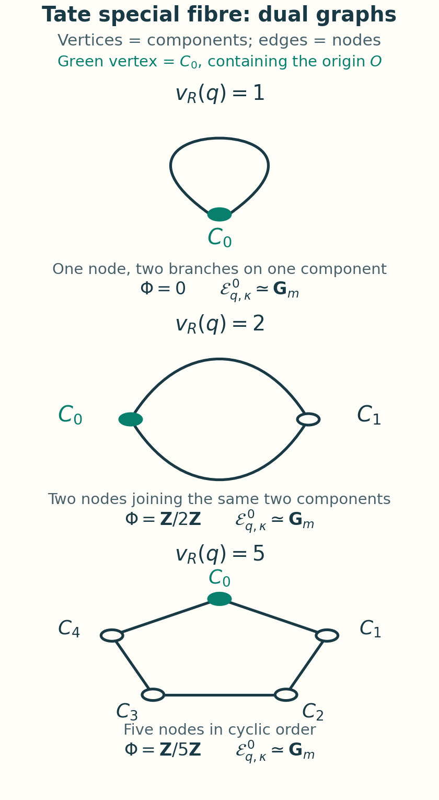

Néron models
Written by GPT-6.1 Sol (OpenAI) in Codex, Ultra setting, October 2026. Self-checked by the writing AI for definitions, hypotheses, proofs and complete exercise solutions. Independent AI or human review is not claimed. Public domain (CC0).
A proper model extends a point across a valuation ring. A Néron model extends a whole family across a smooth parameter scheme. Those are different demands: a rational map from a surface can have an indeterminate point even when the target is proper. The group law supplies the additional extension mechanism.
Throughout, \(R\) is an arbitrary discrete valuation ring, \(\pi\) a uniformizer, \(K=\operatorname{Frac}(R)\), and \(\kappa=R/\pi R\). We do not assume that \(R\) is complete, excellent or henselian, or that \(\kappa\) is perfect. An abelian variety \(A_K\) has the meaning fixed in Lesson 6. We use the valuative criterion, smooth local coordinates, regular local rings, faithfully flat descent and constructibility of images from the scheme-theory prerequisites. The arguments for group schemes, dilatations and the Néron mapping property are developed here.
1. The extension problem defines the model
A model of \(A_K\) over \(R\) includes a specified identification of its generic fibre with \(A_K\). A Néron model is a smooth separated \(R\)-scheme \(\mathcal A\) of finite type, with that identification, for which restriction gives a bijection
\[ \operatorname{Hom}_R(T,\mathcal A) \ \xrightarrow{\ \sim\ }\ \operatorname{Hom}_K(T_K,A_K) \tag{1} \]for every smooth \(R\)-scheme \(T\). Smooth schemes here need not be quasi-compact. It is enough to prove the extension property on affine open pieces and then glue. The same definition makes sense for a smooth separated \(K\)-scheme other than an abelian variety.
Lemma 1.1. Generic-fibre equality. If \(T\) is flat over \(R\), \(X\) is separated over \(R\), and two \(R\)-morphisms \(T\to X\) agree on \(T_K\), they agree on \(T\).
Proof. The equalizer is the inverse image of the closed diagonal of \(X/R\), hence a closed subscheme of \(T\). Its ideal restricts to zero after inverting \(\pi\). Every section of that ideal is therefore killed locally by some power of \(\pi\). Flatness over a DVR means that the structure sheaf has no \(\pi\)-torsion. The ideal is zero. This also proves the assertion when \(T\) has nilpotents. \(\square\)
Thus the difficult part of (1) is existence. Separatedness and smoothness already imply uniqueness.
Theorem 1.2. Uniqueness and functoriality. A Néron model is unique up to the unique isomorphism inducing the specified generic-fibre identification. Every \(K\)-morphism between generic fibres of Néron models extends uniquely to an \(R\)-morphism of the models.
Proof. If \(\mathcal A\) and \(\mathcal A'\) are two models of the same variety, use \(T=\mathcal A\) in the mapping property of \(\mathcal A'\). This gives \(f:\mathcal A\to\mathcal A'\) extending the identity. Reversing the roles gives \(g:\mathcal A'\to\mathcal A\). Lemma 1.1 gives \(gf=1\) and \(fg=1\). The same application with a specified morphism of generic fibres gives functoriality; compositions agree by Lemma 1.1. \(\square\)
Corollary 1.3. The group law is forced. The group structure of \(A_K\) extends uniquely to \(\mathcal A\), and \(\mathcal A\) is commutative.
Proof. The schemes \(\mathcal A\times_R\mathcal A\), \(\mathcal A\), and \(\operatorname{Spec}R\) are smooth over \(R\). Apply (1) to the generic multiplication, inverse and identity to obtain
\[ m:\mathcal A\times_R\mathcal A\to\mathcal A,\qquad i:\mathcal A\to\mathcal A,\qquad e:\operatorname{Spec}R\to\mathcal A. \tag{2} \]The two associativity maps have the flat source \(\mathcal A^3\) and agree generically. The unit, inverse and commutativity identities are likewise equalities of maps from flat schemes which hold generically. Lemma 1.1 proves all of them. It also shows that extensions of generic group homomorphisms are group homomorphisms. \(\square\)
Néron models commute with finite products when the models exist. A map to a product is a pair of maps, so the product of two smooth separated models satisfies (1) for the product of their generic fibres.
The test scheme \(\operatorname{Spec}R\) in (1) gives
\[ \mathcal A(R)=A_K(K). \tag{3} \]This equality of sections is a consequence of the mapping property. Section 3 will show why, for a smooth separated group model, its analogue over the strict henselization is also enough to recover the full property.
2. How the group law removes indeterminacy
A rational map from a regular scheme is defined in codimension at most one if it extends near every point of codimension zero or one. We need the following form of Weil's extension argument. Its base is a DVR, which is the full generality required for the model problem in this lesson.
Lemma 2.1. Affine extension. Let \(Z\) be a locally noetherian normal scheme. A rational map from \(Z\) to an affine scheme which is defined in codimension at most one extends everywhere. More generally, the complement of its maximal domain of definition, if nonempty, is a union of codimension-one closed subsets.
Proof. Work on an integral affine open \(\operatorname{Spec}B\subset Z\). For a noetherian normal domain,
\[ B=\bigcap_{\operatorname{ht}\mathfrak p=1}B_{\mathfrak p} \quad\text{inside }\operatorname{Frac}(B). \tag{4} \]This is the normal-domain intersection theorem, a commutative-algebra prerequisite; its statement and proof are recorded in Stacks Tag 031T. Each coordinate of an affine-valued rational map is therefore regular if it is regular in codimension one. The equations defining the map hold in the fraction field and consequently in \(B\). This gives the extension.
For the last assertion it is enough to work near any proposed point of indeterminacy and choose finitely many affine coordinates of the target. For a nonzero coordinate \(x=a/b\), its denominator ideal is \(D=B\cap x^{-1}B\): an element \(c\in B\) belongs to \(D\) exactly when \(cx\in B\). The coordinate is regular at a prime \(\mathfrak p\) exactly when \(D_{\mathfrak p}=B_{\mathfrak p}\). Tag 031T proves that \(B/D\) has only height-one associated primes. Its support, the nonregular locus, is therefore a union of their closures. A zero coordinate has no nonregular locus. Taking the union for the finitely many coordinates proves the assertion. \(\square\)
Theorem 2.2. Weil extension over a DVR. Let \(T\) be smooth over \(R\), and \(G\) a smooth separated \(R\)-group scheme. A rational map
\[ u:T \dashrightarrow G \]defined in codimension at most one extends uniquely to a morphism \(T\to G\).
Proof. The proof is local on \(T\), so take \(T\) affine of finite type and work one regular component at a time. Smoothness over the regular ring \(R\) makes \(T\), and \(P=T\times_R T\), regular. Let \(U\) be the maximal domain of \(u\). Its complement has codimension at least two. In particular \(U\) is dense in every fibre of \(T/R\): generic points of the generic fibre have codimension zero, and generic points of the special fibre have codimension one.
On \(U\times_R U\) form the difference
\[ v(t_1,t_2)=u(t_1)u(t_2)^{-1}. \tag{5} \]Let \(V\subset P\) be its maximal domain. We first prove that \(V\) contains the diagonal \(\Delta_T\).
Fix a diagonal point \(x=(t,t)\), lying over \(s\in\operatorname{Spec}R\). Choose an affine open \(H\subset G\) containing \(e(s)\). After restricting the base near \(s\), its unit section lies in \(H\). Near \(x\), (5) can be regarded as an \(H\)-valued rational map: on the part of the diagonal where \(u\) is defined it equals the unit, so the inverse image of \(H\) is a nonempty open in the regular component of \(P\) under consideration. Let \(V'\) be the maximal domain of this affine-valued map near \(x\). On the diagonal, \(V'\) and \(V\) agree, because every defined value there is the unit.
Suppose \(x\notin V'\). Lemma 2.1 supplies a codimension-one component \(D\) of the complement passing through \(x\). A regular local ring is factorial, so \(D\) is locally given by one nonzero equation \(h\). The diagonal is not contained in \(D\): its dense open \(U\) misses the complement. Thus the restriction of \(h\) to the regular local diagonal is nonzero. It vanishes at \(x\), so the principal ideal theorem makes its zero set a codimension-one subset of that diagonal. But
\[ (P\setminus V')\cap\Delta_T \ \subset\ \Delta_T\setminus U \]has codimension at least two. This contradiction proves \(x\in V'\subset V\).
Now put \(W=V\cap(T\times_R U)\). Projection on the first coordinate
\[ p:W\longrightarrow T \]is smooth and surjective. To see surjectivity, take a geometric point \(t\) of \(T_s\). The open subset \(V_t\) in the second copy of \(T_s\) contains \(t\), because \(V\) contains the diagonal. It meets \(U_s\), which is dense in every component of \(T_s\). Hence the fibre \(W_t\) is nonempty. The finite-type smooth cover \(p\) is faithfully flat.
The morphism
\[ w:W\to G,\qquad w(t_1,t_2)=v(t_1,t_2)u(t_2) \tag{6} \]equals \(u(t_1)\) on the generic dense domain. On \(W\times_T W\) its two pullbacks agree there. Their agreement extends over the entire regular generic fibre, because the target is separated and the source is reduced. The fibre product is smooth over \(T\), hence flat over \(R\), so Lemma 1.1 proves equality everywhere. Faithfully flat descent for morphisms now gives \(T\to G\), extending \(u\). Uniqueness follows from density in the reduced source. \(\square\)
The construction (5) cancels the value of \(u\) along the diagonal. The local extension is therefore tested near the unit, where an affine neighbourhood is available; formula (6) then recovers the desired map by descent. This is the extra mechanism that properness alone does not provide.
Theorem 2.3. Good reduction gives the Néron model. An abelian scheme \(\mathcal B/R\) is the Néron model of \(\mathcal B_K\).
Proof. Recall that an abelian scheme is a proper smooth group scheme with geometrically connected fibres. Let \(T/R\) be smooth and \(f_K:T_K\to\mathcal B_K\) a morphism. The source is regular. At every codimension-one point \(t\) in the special fibre, \(\mathcal O_{T,t}\) is a DVR and its fraction field is the function field of the relevant component of \(T\). Properness extends \(f_K\) across this DVR. Finite presentation spreads that extension to a neighbourhood of \(t\). These local extensions agree on their overlaps by separatedness. Thus \(f_K\) gives a rational map defined in codimension at most one. Theorem 2.2 extends it everywhere. Lemma 1.1 proves uniqueness; for a non-quasi-compact \(T\), carry this out on affine opens and glue. \(\square\)
The theorem assumes the smooth proper model has its abelian-scheme group structure. In Section 8 we identify an explicit smooth cubic model with its Néron model and thereby obtain its group structure. Its chosen point specifies the origin on the generic elliptic curve; a smooth proper model without a specified origin is a different datum.
3. A criterion using unramified points
Write \(R^{\mathrm{sh}}\) for a strict henselization, \(K^{\mathrm{sh}}\) for its fraction field and \(\kappa^{\mathrm{sep}}\) for its residue field. The strict henselization is a filtered union of local étale neighbourhoods of the closed point.
Lemma 3.1. Smooth points and sections. Over a strictly henselian DVR \(V\), rational points of the special fibre of a smooth finite-type \(V\)-scheme are dense in every special-fibre component. Each such point lifts to a \(V\)-section.
Proof. A smooth variety over a separably closed field has local étale coordinates into affine space. On a nonempty open in their image, the fibres of the étale map have closed points with finite separable residue fields. Those fields equal the base field. Rational points of affine space are dense over the infinite separably closed field, so every nonempty open in the smooth variety has a rational point. This proves density. At such a point, smooth local coordinates give an étale neighbourhood over affine space. Lift the coordinates to \(V\) and use the henselian lifting property for the resulting étale neighbourhood to obtain a section. \(\square\)
Lemma 3.2. Extending at a special-fibre generic point. Let \(G/V\) be a smooth separated finite-type group scheme over a strictly henselian DVR. Assume
\[ G(V)\longrightarrow G_K(K) \quad\text{is surjective}. \tag{7} \]Every morphism \(T_K\to G_K\), with \(T/V\) smooth, extends near each generic point of \(T_\kappa\).
Proof. Work with \(T\) affine of finite type and one component. Let \(\Gamma\) be the schematic closure of the generic graph in \(T\times_V G\). Its projection \(p:\Gamma\to T\) is an isomorphism on generic fibres, and \(\Gamma\) is flat over \(V\).
Every \(\kappa\)-rational point \(t_0\) of \(T_\kappa\) lifts to a section \(t\in T(V)\), by Lemma 3.1. Its generic image in \(G_K(K)\) extends to \(g\in G(V)\), by (7). The pair \((t,g)\) factors through \(\Gamma\), since the graph's ideal vanishes generically and \(V\) has no \(\pi\)-torsion. Thus the constructible image \(p(\Gamma)\) contains a dense set of rational points in every component of \(T_\kappa\). It contains the generic point \(\eta\) of each such component.
Choose \(\xi\in\Gamma\) above \(\eta\). The DVR \(B=\mathcal O_{T,\eta}\) embeds in \(C=\mathcal O_{\Gamma,\xi}\), both inside the same function field. The second local ring dominates the first. Any element of that field outside \(B\) has negative valuation; adjoining it to a ring containing \(B\) makes \(\pi\) invertible. This is impossible in \(C\), whose maximal ideal lies over the special fibre. Consequently \(C=B\).
This local equality spreads to an isomorphism between neighbourhoods of \(\xi\) and \(\eta\). Explicitly, choose affine neighbourhoods with coordinate domains \(B_0\subset C_0\) in the common function field. The finitely many generators of \(C_0/B_0\) lie in \((B_0)_\eta\). Clearing their denominators by one element outside \(\eta\) makes \(C_0=B_0\) after localization. Composing the inverse of \(p\) on that neighbourhood with the other graph projection gives the required extension. \(\square\)
Theorem 3.3. The point criterion. A smooth separated \(R\)-group scheme \(G\) of finite type is a Néron model of its generic fibre if and only if
\[ G(R^{\mathrm{sh}}) \ \longrightarrow\ G_K(K^{\mathrm{sh}}) \quad\text{is surjective}. \tag{8} \]The map is then bijective.
Proof. If \(G\) is a Néron model, each point on the right is defined over the fraction field of some local étale neighbourhood, by finite presentation. Choose a finite-type étale neighbourhood realizing that local ring, restrict to its regular component through the chosen special point, and spread the generic point-map to its generic fibre. This generic fibre is the spectrum of the corresponding finite separable field. The mapping property on the étale neighbourhood extends the map. Passing to its local ring and then to \(R^{\mathrm{sh}}\) gives surjectivity. Separatedness gives injectivity.
Conversely, first make the faithfully flat base change to \(R^{\mathrm{sh}}\). For a smooth source \(T\), Lemma 3.2 extends a prescribed generic map at all special-fibre generic points. It is already defined on all of \(T_K\); these are precisely the additional codimension-one points needed. Theorem 2.2 extends the rational map everywhere. The extension is unique.
For a source originally over \(R\), the two pullbacks of this extension to the tensor-square cover agree generically, hence agree by Lemma 1.1. The tensor-square source remains flat over \(R\). Faithfully flat descent gives the extension over \(R\). This proves (1). \(\square\)
The group hypothesis matters in this criterion: it is what permits Theorem 2.2. A smooth model of a proper variety which extends unramified points need not extend all smooth families.
4. Dilatations and one-point smooth approximation
For a flat local extension of DVRs \(R\subset R'\), we shall explicitly require
\[ \pi R' \text{ is the maximal ideal of }R', \qquad \kappa'/\kappa \text{ is separable}. \tag{9} \]For possibly transcendental field extensions, “separable” means geometrically reduced as an algebra over the smaller field. The completion, henselization and strict henselization satisfy (9). Condition (9) imposes no separability requirement on the extension of fraction fields. In particular the completion of a nonexcellent DVR is included.
Let \(X/R\) be of finite type and \(Y\subset X_\kappa\) a closed subscheme with ideal \(J\), so \(\pi\in J\). Its dilatation is the open chart of \(\operatorname{Bl}_JX\) on which \(J\) is generated by \(\pi\). Affine-locally it has coordinate algebra
\[ A[J/\pi]\subset A[1/\pi], \tag{10} \]where any \(\pi\)-torsion in \(A\) is first removed. Equivalently, for \(J=(\pi,j_1,\ldots,j_m)\) use
\[ A[T_1,\ldots,T_m]/(\pi T_i-j_i) \]and divide out its \(\pi\)-power torsion. This is a finite-type flat \(R\)-algebra with the same generic fibre as \(A\).
Proposition 4.1. Universal property. A morphism \(Z\to X\) from a flat \(R\)-scheme factors uniquely through the dilatation if its special fibre factors through \(Y\).
Proof. Locally, each \(j_i\) maps into \(\pi\mathcal O_Z\). Its quotient by \(\pi\) is unique, because \(\mathcal O_Z\) has no \(\pi\)-torsion. Send \(T_i\) to that quotient. The relations and the discarded torsion vanish, giving the factorization. Uniqueness lets these affine constructions glue. \(\square\)
For a point \(a\in X(R')\) whose generic image is smooth, set
\[ \delta(a)= \operatorname{length}_{R'} \bigl(a^*\Omega_{X/R}\bigr)_{\mathrm{tors}}. \tag{11} \]If an affine neighbourhood embeds in a smooth ambient scheme of relative dimension \(N\), with equations \(f_i\) and smooth coordinates \(z_j\), and the generic fibre at \(a_K\) has dimension \(d\), elementary divisors give
\[ \delta(a)=\min v'\!\left( a^*\det\left(\frac{\partial f_{i_\alpha}} {\partial z_{j_\beta}}\right)_{\alpha,\beta=1}^{N-d} \right). \tag{12} \]The formula follows by presenting \(a^*\Omega\) as a quotient of a free \(R'\)-module of rank \(N\). The relation submodule has rank \(N-d\). In Smith normal form its nonzero diagonal entries have valuations whose sum is the torsion length; their product generates the ideal of the maximal nonzero minors.
Lemma 4.2. Zero defect. One has \(\delta(a)=0\) if and only if \(a\) factors through the smooth locus of \(X/R\).
Proof. Smoothness makes \(a^*\Omega\) free. Conversely, if \(\delta(a)=0\), the dimension of its differential space at the special point is \(d\). In an affine-space presentation, choose \(N-d\) equations whose Jacobian minor is a unit at that point. They define a smooth ambient subscheme \(Z\), of relative dimension \(d\), containing \(X\) locally. The smooth generic component of \(X\) through \(a_K\) has that same dimension and hence equals the component of \(Z_K\) through it near \(a_K\). The local ring of \(Z\) at the special point is a regular domain. Any remaining equation of \(X\) in that ring vanishes on a nonempty open of its generic component, so it vanishes in its fraction field and is zero. Therefore \(X=Z\) near the point. This proves smoothness along \(a\), even when the original presentation included vertical components. \(\square\)
Lemma 4.3. Decrease of defect. Under (9), let \(Y\) be the reduced schematic image of the special point \(a_\kappa\). After restricting to an open neighbourhood of that point, let \(a'\) be the lift of \(a\) to the dilatation of \(Y\). Then
\[ \delta(a')\leq \max\{0,\delta(a)-1\}. \tag{13} \]Proof. The point \(a_\kappa\) is the generic point of \(Y\). Its function field embeds in \(\kappa'\), so separability in (9) makes \(Y\) geometrically reduced. We may shrink near its generic point so that \(Y/\kappa\) is smooth, of dimension \(r\), and \(\Omega_{X/R}|_Y\) is free. The surjection to the free module \(\Omega_{Y/\kappa}\) splits there. Choose lifted coordinates \(y_1,\ldots,y_r\) on \(Y\), and functions \(z_1,\ldots,z_n\) vanishing on \(Y\), whose differentials together give a basis of \(\Omega_{X/R}|_Y\).
Cutting out the redundant ambient coordinates by a unit Jacobian minor embeds \(X\) locally as a closed subscheme of a smooth \(R\)-scheme \(Z\) of relative dimension \(r+n\), with \(dy_i,dz_j\) a basis of \(\Omega_{Z/R}\). The ideal of \(Y\) in \(Z\) is
\[ J=(\pi,z_1,\ldots,z_n). \]Write \(I\subset J\) for the ideal of \(X\) in \(Z\). The map \(\Omega_{Z/R}|_Y\to\Omega_{X/R}|_Y\) is an isomorphism, so \(df|_Y=0\) for \(f\in I\). Express
\[ f=\pi g+\sum_j z_jg_j. \]The differential condition gives \(g_j\in J\). Hence \(f=\pi g+h\), with \(h\in J^2\). Along the point \(a\), every element of \(J\) is divisible by \(\pi\), and \(f(a)=0\); therefore \(g(a)\) is divisible by \(\pi\). Because \(a_\kappa\) is schematically dense in \(Y\), this says \(g|_Y=0\), so \(g\in J\). We have proved
\[ I\subset J^2. \tag{14} \]The dilatation of \(Z\) has coordinates \(y_i,z'_j=z_j/\pi\) and is smooth of the same relative dimension. Its closed flat subscheme giving the dilatation of \(X\) has equations including \(f'=f/\pi^2\) for every \(f\in I\), by (14). If
\[ df=\sum_i b_i\,dy_i+\sum_j c_j\,dz_j, \]the coefficients of \(df'\) in the new coordinates, after evaluation at \(a'\), are \(b_i(a)/\pi^2\) and \(c_j(a)/\pi\). Put \(q=r+n-d\). Choose a \(q\)-minor realizing (12) for the old equations. The corresponding minor of the divided equations has valuation at most \(\delta(a)-q\), since each of its columns is divided by at least one factor of \(\pi\). Formula (12) for the new ideal gives
\[ \delta(a')\leq\delta(a)-q. \tag{15} \]If \(q=0\), the ambient smooth scheme already has the generic dimension \(d\) of \(X\); the component argument in Lemma 4.2 gives \(\delta(a)=0\). Otherwise \(q\geq1\), and (15) proves (13). \(\square\)
Theorem 4.4. Smooth approximation of a point. Assume (9). If \(a\in X(R')\) has generic image in the smooth locus of \(X_K\), there are a smooth finite-type \(R\)-scheme \(U\), a morphism \(U\to X\), and a point \(\widetilde a\in U(R')\) mapping to \(a\).
Proof. First replace \(X\) by the flat schematic closure of its generic fibre and by an open neighbourhood of the image of \(a\). Apply Lemma 4.3 and the universal property to lift the point through a dilatation. Repeat if its defect is still positive. The nonnegative integer (11) decreases strictly at every such step, so after finitely many steps it is zero. Lemma 4.2 then puts the lifted point in the smooth locus of the resulting finite-type scheme. Take that open smooth locus for \(U\). \(\square\)
This theorem smooths a single prescribed point, with a sequence that may depend on it. The uniform smoothening needed for Néron's existence theorem requires another finite-stratification argument.
Example 4.5. A singular model with a smooth lift. Take
\[ X=\operatorname{Spec}R[x,y]/(xy-\pi^2),\qquad a^*x=a^*y=\pi. \]The module \(a^*\Omega\) has relation \(\pi(dx+dy)=0\), so its torsion length is one. Dilating the closed point \((\pi,x,y)\) gives
\[ x=\pi x',\quad y=\pi y',\qquad x'y'=1. \]The new model is \(\mathbb G_{m,R}\), smooth, and the point lifts to \(x'=y'=1\). The division by \(\pi^2\) in (14) is visible in this equation.
5. Étale extensions, henselization and completion
Proposition 5.1. Étale base change. If \(\mathcal A/R\) is a Néron model and \(S'\to\operatorname{Spec}R\) is étale, then \(\mathcal A\times_R S'\) satisfies the Néron mapping property over \(S'\), with respect to its generic open fibre.
Proof. A smooth \(S'\)-scheme \(T\) is smooth over \(R\). A map from its generic open fibre to \(A_K\times_K S'_K\) determines a map to \(A_K\). Extend that map to \(T\to\mathcal A\) using (1), and pair it with the given structure map \(T\to S'\). The resulting map goes to the fibre product. Uniqueness is Lemma 1.1. Smoothness, separatedness and finite type are preserved by base change. \(\square\)
For a local étale extension which is a DVR, this is exactly the usual Néron-model assertion. The next theorem includes the limit rings which are not themselves étale of finite presentation.
Theorem 5.2. Base change with unchanged uniformizer. Let \(R\subset R'\) satisfy (9), with fraction fields \(K\subset K'\). If \(G/R\) is a Néron model of a smooth finite-type \(K\)-group \(G_K\), then \(G_{R'}\) is the Néron model of \(G_{K'}\).
Proof. By Theorem 3.3, it is enough to show that every \(G_{K'}\)-point over the fraction field \(K''\) of \((R')^{\mathrm{sh}}\) extends to \(G\) over \(R''=(R')^{\mathrm{sh}}\). The extension \(R\subset R''\) still satisfies (9).
Fix \(b\in G_K(K'')\), and choose an affine open \(W_K\subset G_K\) through which it factors. Write its coordinate algebra as \(K[f_1,\ldots,f_m]\). Choose integers \(n_i\geq0\) for which \(\pi^{n_i}b^*f_i\in R''\), and set
\[ B=R[\pi^{n_1}f_1,\ldots,\pi^{n_m}f_m] \subset\Gamma(W_K,\mathcal O_{W_K}). \tag{16} \]Then \(X=\operatorname{Spec}B\) is a finite-type flat model of \(W_K\), and \(b\) gives an \(R''\)-point of \(X\). Its generic fibre lies in the smooth \(K\)-scheme \(W_K\). Theorem 4.4 factors this point through a smooth \(R\)-scheme \(U\to X\). The composite
\[ U_K\longrightarrow W_K\longrightarrow G_K \]extends to \(U\to G\) by the original Néron mapping property. Evaluating at the lifted \(R''\)-point gives the desired extension of \(b\). Theorem 3.3 over \(R'\) proves the result. \(\square\)
Corollary 5.3. For a Néron model of an abelian variety, its formation commutes with henselization, strict henselization and completion:
\[ \mathcal A_{R^h},\qquad \mathcal A_{R^{\mathrm{sh}}},\qquad \mathcal A_{\widehat R} \tag{17} \]are the respective Néron models of the base-changed generic fibres.
Proof. Each ring is a DVR with uniformizer \(\pi\). Henselization has the same residue field, strict henselization has separable residue extension, and completion has the same residue field. Theorem 5.2 applies in all three cases. \(\square\)
The word “unchanged” in (9) is essential. For a ramified extension with \(\pi=u(\pi')^e\), \(e>1\), the uniqueness of division and the defect decrease in Section 4 concern a different scale, and Theorem 5.2 does not give compatibility.
6. The existence construction
Theorem 4.4 used a different sequence for each point. To construct one finite-type model, we must make the sequence uniform.
Lemma 6.1. Bounded defect. If \(X/R\) is of finite type and \(X_K\) is smooth, there is a finite bound for \(\delta(a)\) as \(a\) varies in \(X(R^{\mathrm{sh}})\).
Proof. Cover \(X\) by finitely many affine presentations in affine spaces. The image of any section lies in one of these opens: an open containing its special point also contains its generic point. On one such affine let \(N\) be the ambient relative dimension. Partition the generic fibre into the finitely many open-and-closed unions \(X_{K,d}\) of components of dimension \(d\). On \(X_{K,d}\), the \((N-d)\)-minors of the Jacobian generate the unit ideal, by smoothness.
Take the flat schematic closure \(X_d\) of \(X_{K,d}\) in the affine. Clearing denominators in that unit-ideal identity gives
\[ \pi^{c_d}=\sum_\alpha h_\alpha\Delta_\alpha \quad\text{in }\Gamma(X_d,\mathcal O_{X_d}), \tag{18} \]for some \(c_d\geq0\), with \(\Delta_\alpha\) the relevant minors. A section whose generic point belongs to \(X_{K,d}\) factors through \(X_d\), because its coordinate ring is torsion-free. Evaluating (18) shows that at least one minor has valuation at most \(c_d\). Formula (12) gives \(\delta(a)\leq c_d\). The maximum of these finitely many bounds over all affines and dimensions proves the result. \(\square\)
We shall use a version of Lemma 4.3 with a family of points. Let \(E\subset X(R^{\mathrm{sh}})\), and let \(Y\subset X_\kappa\) be the reduced schematic closure of their specializations. Its rational points inherited from \(E\) are schematically dense. Since their residue fields are separable over \(\kappa\), \(Y\) is geometrically reduced. On the dense open where \(Y/\kappa\) is smooth and \(\Omega_{X/R}|_Y\) is locally free, the same calculation as in Lemma 4.3 gives (13) for each point specializing there. In that calculation the inference \(g|_Y=0\) follows from its vanishing on the schematically dense family, instead of on the single generic point. No other step changes.
Call a closed reduced \(Y\subset X_\kappa\) admissible for \(E\) if the specializations of the points in \(E\) landing in \(Y\) are schematically dense there and all of them lie in that smooth, differential-free open. If \(X'\to X\) is the blow-up of such a \(Y\), each section lifts uniquely by properness and the unchanged generic fibre. A section specializing outside \(Y\) sees an isomorphism; one specializing in \(Y\) lies in the dilatation chart by Proposition 4.1. Consequently
\[ \delta(a')=\delta(a)\quad(a_\kappa\notin Y),\qquad \delta(a')\leq\max\{0,\delta(a)-1\}\quad(a_\kappa\in Y). \tag{19} \]Theorem 6.2. Uniform smoothening. If \(X/R\) is of finite type with smooth generic fibre, there is a proper morphism \(X'\to X\), a finite composite of blow-ups with centres in special fibres, which is an isomorphism generically and for which every \(R^{\mathrm{sh}}\)-point of \(X'\) lies in its smooth locus. The centres can be taken in the successive nonsmooth loci.
Proof. We prove the stronger assertion for an arbitrary subset \(E\subset X(R^{\mathrm{sh}})\) with bounded defect: make all its lifted points smooth by a finite sequence of such blow-ups. Induct first on the maximum defect \(c\). The case \(c=0\) is Lemma 4.2.
Discard points already smooth; every remaining point has positive defect, and its specialization lies in the closed nonsmooth locus. Construct a finite stratification of the remaining specializations as follows. Set \(F_1=E\), let \(Y_1\) be their reduced schematic closure, and let \(U_1\subset Y_1\) be the dense open where \(Y_1\) is smooth and \(\Omega_{X/R}|_{Y_1}\) is locally free. Put
\[ E_1=\{a\in F_1:a_\kappa\in U_1\},\qquad F_2=F_1\setminus E_1. \]Repeat with \(F_2\). At every nonempty stage, its reduced closure \(Y_{j+1}\) lies in \(Y_j\setminus U_j\) and has smaller dimension. Thus after finitely many stages
\[ E=E_1\sqcup\cdots\sqcup E_t, \qquad Y_{j+1}\subset Y_j\setminus U_j, \qquad Y_t=\overline{(E_t)_\kappa}, \tag{20} \]and every point of \(E_t\) specializes in \(U_t\). In particular \(Y_t\) is admissible for the whole \(E\): points of the earlier \(E_j\) specialize outside \(Y_t\).
Blow up \(Y_t\). Formula (19) lowers the bound on the lifted \(E_t\) to at most \(c-1\), and leaves all earlier strata unchanged along their sections. The induction hypothesis on \(c\) makes the lifted \(E_t\) smooth. Throughout that subsidiary construction its centres may be restricted to the closure of the specializations under treatment, so their images in the original \(X\) stay in \(Y_t\); sections of the earlier strata are still unaffected.
Now discard the smooth lifted \(E_t\). Their removal leaves the earlier \(t-1\) strata with the same smooth-coordinate neighbourhoods along their specializations. More precisely, for the lifted closure of \(E_j\sqcup\cdots\sqcup E_{t-1}\), choose as good open the inverse image of the original \(U_j\). The modification is an isomorphism there, since \(U_j\) misses \(Y_t\). This inverse image is dense in the new closure, is smooth with free differentials along it, contains exactly the lifted \(E_j\), and misses the later sets. New closure points above \(Y_t\) lie outside this chosen good open and are not specializations of a remaining section. Thus the earlier \(t-1\) strata, with these specified good opens, still have exactly the form (20). A second induction on the number of strata makes all the remaining points smooth, with maximum defect still at most \(c\). Later centres in nonsmooth loci cannot affect sections already made smooth.
This nested induction terminates, proving the assertion for \(E\). For \(E=X(R^{\mathrm{sh}})\), Lemma 6.1 supplies the bound. Properness gives a bijection on those sections at every blow-up, and the conclusion is the asserted smoothening. \(\square\)
Definition 6.3. A weak Néron model of a smooth separated \(K\)-scheme \(X_K\) is a smooth separated finite-type \(R\)-model \(W\) for which
\[ W(R^{\mathrm{sh}})\xrightarrow{\sim}X_K(K^{\mathrm{sh}}). \tag{21} \]One can more generally allow a finite collection of smooth models which together extend all the points. For a proper \(X_K\), one model suffices for the construction here.
Corollary 6.4. Abelian varieties have weak Néron models. Every abelian variety over \(K\) has a weak Néron model over \(R\).
Proof. Lesson 6 proves that \(A_K\) is projective. Embed it in \(\mathbb P^n_K\) and take its flat schematic closure \(M\subset\mathbb P^n_R\). This is a proper finite-type model. The valuative criterion gives
\[ M(R^{\mathrm{sh}})=A_K(K^{\mathrm{sh}}). \]Apply Theorem 6.2 to \(M\). The resulting proper model \(M'\) has the same sections, all in its smooth locus \(W\). This locus is an open finite-type separated model whose generic fibre is \(A_K\), and it satisfies (21). \(\square\)
A weak model need not have a group law. Theorem 3.3 applies only after the group law has been constructed; using it on \(W\) at this stage would be circular.
Lemma 6.5. The weak mapping property. Let \(W\) satisfy (21), and let \(T/R\) be smooth with irreducible special fibre. A morphism \(T_K\to X_K\) extends to an \(R\)-rational map \(T\dashrightarrow W\), meaning one whose domain is dense in each fibre.
Proof. The graph argument of Lemma 3.2 uses only (21), smooth lifting of special-fibre points, separatedness and finite type of the target. It does not use a group law. After strict henselization, it therefore extends the map near the generic points of the special fibre. These extensions descend as rational maps: their graph projections are generically isomorphisms, and being an isomorphism near a fibre generic point is preserved and detected by the faithfully flat étale-limit cover. Equivalently, use the constructible graph image over \(R\): the closed points of separable residue field in the smooth special fibre are dense, lift after local étale extension, and yield points of that image just as in Lemma 3.2. The DVR argument then gives the extension at the original generic point. Its domain contains \(T_K\) and an open dense part of \(T_\kappa\), as required. \(\square\)
Lemma 6.6. Minimum-order volume forms. Let \(W\) be the weak model in Corollary 6.4, \(g=\dim A_K\), and choose a nonzero invariant form
\[ \omega\in\Gamma(A_K,\Omega^g_{A_K/K}). \]After multiplying \(\omega\) by a power of \(\pi\), it extends to a global section of \(\Omega^g_{W/R}\), with minimum order zero on the special-fibre components. Removing the positive-order components gives an open model \(X\subset W\), with nonempty special fibre, on which \(\omega\) is a generator.
Proof. Lesson 1 identifies invariant differentials with their values at the identity. Taking the highest exterior power gives \(\omega\), which is nowhere zero on \(A_K\). At the generic point \(\eta_j\) of each of the finitely many special-fibre components, the local ring of the smooth model is a DVR with uniformizer \(\pi\). There is a unique integer \(r_j\) for which \(\pi^{-r_j}\omega\) generates the local differential line. Subtract the minimum of the \(r_j\) by scaling \(\omega\).
All its remaining orders are nonnegative. There are no horizontal poles, since it generates the differential line on \(A_K\). Lemma 2.1, applied to its coefficients in local trivializations, extends it globally. A nonzero section of a line bundle on a regular integral scheme has its zero set supported on codimension-one prime divisors: locally its coefficient is one nonzero element in a regular domain. Here those primes are precisely the special-fibre components with \(r_j>0\). Removing them leaves the required \(X\). Its special fibre is nonempty because at least one order is zero, and it contains the entire generic fibre \(A_K\). \(\square\)
The open \(X\) need not be dense in the discarded components of \(W_\kappa\). It remains quasi-projective over \(R\), because \(W\) was the smooth open of a projective blow-up model. Below, a fibre-dense open of \(X\) will mean one dense in every component of both \(X_K\) and \(X_\kappa\).
Theorem 6.7. A birational group law on the minimum model. The addition on \(A_K\) extends to an \(R\)-rational map \(m:X\times_R X\dashrightarrow X\). Its universal translations
\[ \Phi(x,y)=(x,m(x,y)),\qquad \Psi(x,y)=(m(x,y),y) \tag{22} \]are \(R\)-birational maps. Associativity holds wherever both sides of the corresponding formula are defined.
Proof. Lemma 6.5, applied on the finitely many special-fibre components, extends generic addition to an \(R\)-rational map \(X\times_R W\dashrightarrow W\). Let \(D\) be its domain. View \(D\) and \(X\times_R W\) as smooth schemes over the first \(X\), and write \(\omega_2\) for the differential form pulled back from the second factor. The morphism
\[ \varphi:D\longrightarrow X\times_R W,\qquad (x,y)\longmapsto(x,m(x,y)) \]satisfies
\[ \varphi^*\omega_2=\omega_2 \tag{23} \]as relative \(g\)-forms. On the generic fibre this is invariance of \(\omega\) under translation by the universal \(A_K\)-point. Both sides are regular sections, so generic density in the flat source proves (23) everywhere.
Take a point of \(D\cap(X\times_R X)\). There \(\omega_2\) is a generator. Near its image in \(X\times_R W\), write the target form as \(f\) times a local generator. Write \(b\) for the determinant of the relative differential of \(\varphi\) in these generators. Equation (23) says
\[ \varphi^*f\,b=1. \tag{24} \]Thus both factors are units. The target form is a generator at the image, so that image belongs to \(X\times_R X\), by Lemma 6.6. Also the relative differential is an isomorphism. The smooth-coordinate Jacobian criterion makes \(\varphi\) étale there.
It follows that generic addition restricts to a map \(m:U\to X\) on a fibre-dense open \(U\subset X\times_R X\), and that \(\Phi:U\to X\times_R X\) is étale. It is separated and generically an isomorphism. Zariski's Main Theorem for a quasi-finite birational map to a normal scheme therefore makes it an open immersion. The same argument applies to \(\Psi\), using right invariance; \(A_K\) is commutative, so left and right invariant forms coincide.
The images of these open immersions are fibre-dense. On the generic fibre they are the complete group isomorphisms. On the special fibre the domain contains the generic point of every component. Distinct components of a smooth special fibre are disjoint. Two of them cannot have images dense in the same target component under an open immersion, because those two nonempty open images would intersect. The finite source and target component counts are the same, namely those of \(X_\kappa\times_\kappa X_\kappa\), so every target component is met. This proves the \(R\)-birational assertions. Generic associativity extends across each common domain by Lemma 1.1. \(\square\)
Theorem 6.7 constructs the group law near the generic points of all retained special components. To turn it into a group scheme, the translated domains must also be dense after fixing either input at an arbitrary point. This is the additional strictness condition used in the next step.
Lemma 6.8. Making the law strict. There is a fibre-dense open \(X^\circ\subset X\), containing \(A_K\), and a locally closed graph \(\mathcal W\subset(X^\circ)^3\), for which each pair-coordinate projection
\[ q_{ij}:\mathcal W\longrightarrow X^\circ\times_R X^\circ \quad(1\leq i<j\leq3) \tag{25} \]is an open immersion. Its image remains dense in the other coordinate after either coordinate is fixed at an arbitrary geometric point. These properties persist under every base change.
Proof. Start with the graph of \(m:U\to X\) in Theorem 6.7. Its pair projections have open images \(U\), \(\Phi(U)\) and \(\Psi(U)\), all fibre-dense. They contain the entire generic product.
For each of these three opens \(O\subset X^2\) and each projection \(p:X^2\to X\), put \(C=X^2\setminus O\), with its reduced closed structure. All geometric fibres of \(p\) are smooth and pure of dimension \(g=\dim A_K\). Thus \(O\) fails to be dense in a fibre exactly when \(\dim C_x=g\): a closed subset of that dimension contains a fibre component, and the converse is immediate. The finite-presentation fibre-dimension theorem makes this bad locus constructible; this is the exact prerequisite recorded in Stacks Tag 05F9.
None of those bad loci contains a generic point of \(X_\kappa\). After a separable field extension splitting the smooth components, the generic points in a product fibre over such a point are generic points of the appropriate special-product components, all in \(O\). There are no bad points in \(X_K\), where the three maps are group isomorphisms on the complete product. A constructible subset of a noetherian space has its generic points of closure in the subset: on each irreducible closure it contains a dense open. Thus the closures of the six bad loci lie in \(X_\kappa\) and contain none of its generic points.
Remove their union to obtain \(X^\circ\). Restrict the graph to \((X^\circ)^3\). Its pair projections remain open immersions. To check the density of their images, fix one coordinate, say \(x_i=a\). Before the restriction, the two projections of the graph sharing this coordinate identify that fibre of the graph with dense open subsets of the respective other copies of \(X\). The correspondence between those two opens is an isomorphism. Requiring each of the other two coordinates to lie in \(X^\circ\) therefore removes only nowhere dense closed subsets, and leaves a dense open in each coordinate. This proves the assertion for every pair and every choice of fixed coordinate.
We justify the schematic density after arbitrary, possibly nonreduced, base change. Locally the original base is \(\operatorname{Spec}B\) with \(B\) noetherian. After any noetherian \(B\)-algebra \(B'\), the smooth family is flat and its fibres are reduced. The flat associated-point formula says that its associated points are associated points of fibres over associated points of the base; in a reduced noetherian fibre these are its generic points. Our fibre-dense open contains them all. The associated-point criterion therefore makes restriction of functions to that open injective. These are the precise prerequisites of Stacks Tags 05DB and 083P.
An arbitrary \(B\)-algebra is a filtered union of finitely generated \(B\)-subalgebras. On an affine open of the original family, our open is a finite union \(D(f_1)\cup\cdots\cup D(f_r)\). Schematic density is injectivity of the map from its affine coordinate ring to the finite product of its localizations at the \(f_i\). We have proved this injectivity at every noetherian stage; filtered colimits preserve it and commute with that finite product and with localization. This proves the assertion for every base algebra. Thus all the density assertions just established persist schematically under arbitrary base change. The graph and its open pair projections likewise commute with base change. \(\square\)
We write \(x_1x_2=x_3\) for a point of \(\mathcal W\). Fixing any two coordinates determines the third on the corresponding open. The other two operations are denoted \(x_1^{-1}x_3\) and \(x_3x_2^{-1}\); these are division operations of the partial law and do not yet assert that its identity or inverse is a point of \(X^\circ\).
We now explain the enlargement through translation charts. This also identifies exactly the descent problem that remains.
Lemma 6.9. The translation sheaf. For a strict law as in Lemma 6.8 on a smooth separated scheme \(Y/S\), the functor of relative birational self-maps of \(Y\) is an fppf sheaf of groups \(\mathscr R\). There is an injective morphism of sheaves
\[ \lambda:Y\longrightarrow\mathscr R,\qquad a\longmapsto(y\mapsto ay). \tag{26} \]Let \(\mathscr G\subset\mathscr R\) be the subsheaf of groups generated by these translations. Then \(\lambda:Y\to\mathscr G\) is a representable open immersion, and
\[ d:Y\times_S Y\longrightarrow\mathscr G,\qquad (a,b)\longmapsto\lambda(a)\lambda(b)^{-1} \tag{27} \]is representable, smooth and surjective.
Proof. A relative birational map over \(T/S\) is an isomorphism between two universally fibre-dense opens of \(Y_T\), considered up to agreement on such an open. Finite intersections remain universally fibre-dense. To compose two representatives, intersect the first image with the second domain and take its inverse image. This defines composition independently of representatives; reversing a representative defines the inverse.
These data descend in the fppf topology. More explicitly, a rational map to a separated target has a largest domain, obtained by gluing all its agreeing representatives. Under a flat locally finitely presented cover, that largest domain pulls back to the largest domain on the cover: if the map extends on the cover over a point, its agreeing pullbacks descend on the saturated open neighbourhood, by descent for morphisms. The largest domains of a compatible birational map and its inverse therefore descend as opens; their inverse isomorphisms descend too. Density is checked on geometric fibres. This proves the sheaf assertion.
Strictness gives (26) and the analogous right translation \(\rho(b)\). Associativity gives
\[ \lambda(a)\lambda(b)=\lambda(ab) \quad\text{where }ab\text{ is defined},\qquad \lambda(a)\rho(b)=\rho(b)\lambda(a). \tag{28} \]All members of \(\mathscr G(T)\) commute with right translations, fppf-locally by its definition and hence globally by the sheaf property.
We use two cancellation observations. First, if \(h\in\mathscr G(T)\) is defined at a section \(x\) and fixes it, then \(h=1\). For a variable \(z\) in the universally dense open where the expressions are defined, commutation gives
\[ h(xz)=h(x)z=xz. \]The left translation by \(x\) identifies this open with a universally dense open in \(Y_T\), proving equality of the relative birational maps. Second, if \(\lambda(a)=\lambda(b)\), evaluate at a variable \(z\) in the common dense domain. The triples \((a,z,az)\) and \((b,z,bz)\) have the same last two coordinates; the injective pair projection \(q_{23}\) gives \(a=b\) after the faithfully flat cover supplied by that open. Descent gives \(a=b\) over \(T\). This proves injectivity.
To prove representability of \(\lambda\), fix \(h\in\mathscr G(T)\) and use a representative defined on a universally dense open \(D\subset Y_T\). On the open
\[ E=\{x\in D:(x,hx)\text{ belongs to the division domain }q_{23}(\mathcal W_T)\}, \]extract \(a=(hx)x^{-1}\). The identity \(\lambda(a)(x)=h(x)\), followed by the fixed-section observation, gives \(\lambda(a)=h\) over \(E\). The two extracted sections agree on \(E\times_T E\) by injectivity of \(\lambda\). Since \(Y_T\to T\) is smooth, the image \(V\) of \(E\) is open and \(E\to V\) is a faithfully flat cover. Thus \(a\) descends to a section on \(V\).
This open \(V\) represents the inverse image of \(Y\) under \(h:T\to\mathscr G\). Indeed, if after any base change \(T'\to T\) one has \(h=\lambda(a')\), choose the common universally dense open where \(h(x)=a'x\) is defined. There the graph law makes \((x,hx)\) a pair in the division domain, so that open maps to \(E\). Its surjectivity over \(T'\) forces \(T'\to T\) to factor through \(V\). The extracted section is \(a'\), by injectivity. This proves the required universal property and the open immersion.
For (27), its fibre over \(h\in\mathscr G(T)\), projected to the second \(Y_T\), is the inverse image of the open immersion \(\lambda:Y_T\to\mathscr G_T\) under \(b\mapsto h\lambda(b)\). It is therefore an open subscheme of \(Y_T\), so is smooth over \(T\). It is dense in every geometric fibre, as the following pointwise calculation shows.
Over an algebraically closed field, take \(b\) in the dense domain of the birational map \(h\), and put \(a=h(b)\). For a variable \(z\) in the common domain, commutation with the right translation by \(z\) gives
\[ h(bz)=h(b)z=az. \]Hence \(h\lambda(b)=\lambda(a)\). Conversely, if this equality holds, choose \(z\) with \(bz\) in the domain of \(h\) and both products \(bz,az\) defined. The morphism \(\rho(z)^{-1}h\rho(z)\), representing \(h\), is then defined at \(b\) and takes it to \(a\). Thus the fibre is exactly the graph of \(h\) on its dense domain. This proves geometric fibre density and nonemptiness, and consequently smooth surjectivity of (27). \(\square\)
Theorem 6.10. Enlargement over a strictly henselian DVR. Over \(S=\operatorname{Spec}R^{\mathrm{sh}}\), the strict law on \(Y=X^\circ_S\) extends to a smooth separated group scheme \(H/S\) of finite type, with \(Y\) a fibre-dense open subscheme and generic fibre \(A_{K^{\mathrm{sh}}}\).
Proof. Use \(\mathscr G\) from Lemma 6.9. Every \(h\in\mathscr G(S)\) gives the open chart
\[ \lambda_h:Y\longrightarrow\mathscr G,\qquad a\mapsto h\lambda(a). \tag{29} \]Their pairwise overlaps are open subschemes of \(Y\), by representability of \(\lambda\), and their transition maps are isomorphisms satisfying the cocycle identity. It remains to show that these charts cover the sheaf; they can then be glued to a scheme.
First, over an algebraically closed field the same charts, allowing all group elements over that field, cover the group sheaf. Fix any point \(a\) of \(Y\); a group element \(g\) belongs to the chart indexed by \(g\lambda(a)^{-1}\). The resulting scheme is smooth; Lemma 6.9 makes it quasi-compact because it is the image of the finite-type \(Y^2\) under (27), so it is of finite type. The open \(Y\) is dense, by the fibre calculation at the end of that lemma.
Now work with the special fibre of \(S\). Its residue field \(k\) is separably closed. The \(k\)-rational points of the smooth \(Y_k^2\) are universally dense: if a function after field extension vanishes on all such points, write its finitely many coefficients in a linearly independent \(k\)-basis and apply density over \(k\) to each coefficient. Thus after extension to an algebraic closure, every nonempty open in \(Y_k^2\) contains one of these rational pairs.
For a geometric point \(g\) of the special group fibre, the set of \(h\) for which \(h^{-1}g\in Y\) is a nonempty open. Pull it back under the smooth surjection (27). Choose a \(k\)-rational pair in that nonempty open. Lemma 3.1 lifts both entries to sections of \(Y/S\), and their difference gives \(h\in\mathscr G(S)\) whose chart (29) contains \(g\).
On the generic fibre, \(Y_{K^{\mathrm{sh}}}=A_{K^{\mathrm{sh}}}\) is already a group, and its translation sheaf is exactly that group. The identity chart covers the whole generic fibre. Therefore (29) covers every geometric point after pulling back any section \(T\to\mathscr G\): the union of the corresponding open inverse images contains every point of \(T\). It is the whole \(T\). Gluing the charts represents \(\mathscr G\) by a smooth scheme \(H\).
The sheaf group structure is now a scheme group structure. The representable smooth surjection (27) makes \(H\) quasi-compact, hence finite type. It also makes the identity section closed: its pullback along (27) is precisely the diagonal \(Y\to Y^2\), closed because \(Y/S\) is separated. Being a closed immersion is faithfully flat local on the target, so the identity \(S\to H\) is closed. Lesson 1 then implies that \(H/S\) is separated.
The field-fibre description in Lemma 6.9 makes \(Y\) dense in every fibre of \(H\). Its generic identification with \(A_{K^{\mathrm{sh}}}\) follows from \(Y_K=A_K\). \(\square\)
The translation sheaf is defined over the original \(R\), and its formation commutes with base change. Thus Theorem 6.10 supplies a canonical descent datum on \(H/R^{\mathrm{sh}}\). Showing that this datum is effective as a scheme is the remaining construction step; descent of an arbitrary smooth separated scheme cannot simply be assumed.
We shall descend a line bundle together with \(H\). Its ampleness makes the scheme descent effective. The generic fibre being an abelian variety allows us to prove the required ampleness without a general structure theorem for algebraic groups.
Lemma 6.11. An affine chart and its horizontal boundary. There is an affine open \(U\subset X^\circ\) dense in both fibres. On \(H/R^{\mathrm{sh}}\), the complement of \(U_{R^{\mathrm{sh}}}\) is the support of the flat closure \(D\) of an effective divisor \(D_K\) on \(A_K\). This closure is an effective Cartier divisor, and the pair
\[ (H,L),\qquad L=\mathcal O_H(D), \tag{30} \]has a canonical descent datum over \(R^{\mathrm{sh}}/R\).
Proof. The scheme \(X^\circ\) is open in the projective blow-up model \(M'\) of Corollary 6.4. Embed \(M'\) in a projective space over \(R\), and let \(Z=M'\setminus X^\circ\) have a closed subscheme structure. The finitely many generic points of \(X^\circ_\kappa\) lie outside \(Z\). A homogeneous equation \(f\) vanishing on \(Z\) can be chosen to vanish at none of those points.
Here is the homogeneous prime-avoidance argument, valid even over a finite residue field. Discard redundant primes in this finite avoidance list so that its remaining homogeneous primes \(P_i\) are incomparable. Choose a positive-degree homogeneous element \(a_i\) in the ideal of \(Z\) and in every \(P_j\) with \(j\ne i\), but outside \(P_i\). To do this, multiply an equation of \(Z\) outside \(P_i\) by homogeneous elements of \(P_j\setminus P_i\), and, if necessary, by a projective coordinate outside \(P_i\). Raise the \(a_i\) to positive powers of a common degree and add them. At \(P_i\) only its own summand is nonzero. The resulting \(f\) has the asserted property.
Then \(U=M'\cap D_+(f)\) is affine, lies in \(X^\circ\), and contains every special-fibre generic point. It also meets the integral generic fibre, hence is dense there. This proves the first assertion.
Write \(U'=U_{R^{\mathrm{sh}}}\). The scheme \(H\) is regular and integral: it is smooth over a DVR and has an integral generic fibre, and flatness leaves no component supported on the special fibre. The boundary of an affine open in a normal separated noetherian scheme is pure of codimension one. For completeness, if a boundary component had codimension at least two, take an affine neighbourhood of its generic point avoiding the other boundary components. The intersection with the given affine open is affine, since the scheme is separated. Lemma 2.1 says that this intersection and the whole neighbourhood have the same regular functions. The inclusion of these two affines would therefore be an isomorphism, contradicting the nonempty boundary.
The open \(U'\) is fibre-dense in \(H\), because it is fibre-dense in \(X^\circ_{R^{\mathrm{sh}}}\) and that chart is fibre-dense in \(H\). Thus no boundary prime is vertical. The boundary primes are exactly the closures of the generic-fibre boundary primes. On the regular \(A_K\), give those primes multiplicity one to obtain \(D_K\). Their closures give an effective Weil divisor \(D\) on regular \(H\); local factoriality makes it Cartier. Its support is exactly \(H\setminus U'\).
Schematic closure in a flat scheme over a DVR commutes with flat base change. Affine-locally this follows because the quotient by its closure ideal has no \(\pi\)-torsion; flat base change preserves this property and the prescribed generic-fibre quotient. On the double overlap \(R^{\mathrm{sh}}\otimes_R R^{\mathrm{sh}}\), the descent isomorphism of \(H\) preserves \(U'\), whose chart came from \(R\), and identifies the generic divisors coming from \(D_K\). It therefore identifies their flat closures. The induced identifications of \(\mathcal O(D)\) satisfy the cocycle condition because the divisor and its canonical rational section do. They give the asserted descent datum. \(\square\)
Lemma 6.12. A relative square for this group. Let \(H^0\) be the open subgroup with connected fibres. For \(g\in H^0(R^{\mathrm{sh}})\), and \(t_g:H\to H\) translation by \(g\), the line bundle in (30) satisfies
\[ t_g^*L\otimes t_{-g}^*L\simeq L^{\otimes2}. \tag{31} \]Proof. The subgroup \(H^0\) exists here without any component-space construction: remove from \(H\) the special-fibre components other than its identity component. The generic fibre remains all of \(A_{K^{\mathrm{sh}}}\). The resulting open is a subgroup, as can be checked on the two geometric fibres; its fibres are geometrically connected, hence geometrically integral by Lesson 3.
On \(H^0\times H^0\times H\), form
\[ M=(g,h,x\mapsto g+h+x)^*L \otimes(g,h,x\mapsto g+x)^*L^{-1} \otimes(g,h,x\mapsto h+x)^*L^{-1} \otimes p_3^*L. \tag{32} \]The theorem of the cube in Lesson 6 says that \(M_K\) is pulled back from a line bundle \(N_K\) on \((H^0_K)^2=A_{K^{\mathrm{sh}}}^2\). Indeed the cube identity for a line bundle on \(A\) makes (32) equal to the pullback of \(m^*L_K\otimes p_1^*L_K^{-1}\otimes p_2^*L_K^{-1}\), up to the constant fibre at the identity.
Extend \(N_K\) to \(N\) on \((H^0)^2\): choose a rational section of \(N_K\), close its divisor in the regular scheme \((H^0)^2\), and use local factoriality. The line bundle \(M\otimes p_{12}^*N^{-1}\) is generically trivial. A generic trivialization makes it the line bundle of a vertical divisor.
Every vertical prime of \((H^0)^2\times H\) is the product of the geometrically integral special fibre of \((H^0)^2\) with one special-fibre component of \(H\). Thus this vertical divisor is \(p_3^*B\) for a divisor \(B\) on \(H\). Restrict to \((e,e,x)\). The restriction of \(M\) is canonically trivial, while that of \(p_{12}^*N\) is pulled back from the base. Consequently \(\mathcal O_H(B)\) is pulled back from the base as well. Absorbing that constant line into \(N\) yields
\[ M\simeq p_{12}^*N. \tag{33} \]Evaluate at \((g,-g,x)\). Its left side is \(L^{\otimes2}\otimes(t_g^*L)^{-1}\otimes(t_{-g}^*L)^{-1}\). Its right side is a line pulled back from \(\operatorname{Spec}R^{\mathrm{sh}}\). Such a line is free of rank one, because the base is local. This gives (31). \(\square\)
Lemma 6.13. The boundary line is ample. The line bundle \(L\) in (30) is ample over \(R^{\mathrm{sh}}\).
Proof. Put \(B=R^{\mathrm{sh}}\) and \(k=B/\pi B\). The sections of \(H^0/B\) are universally dense on each fibre. For the special fibre this is smooth lifting of its \(k\)-points, together with the universal-density argument in Theorem 6.10.
For the generic fibre, let \(Z\subset H^0_{\operatorname{Frac}(B)}\) be a nonempty open. The flat closure \(F\) of its complement does not contain the generic point \(\eta\) of \(H^0_k\). To check this, the local ring at \(\eta\) is a DVR with uniformizer \(\pi\). The ideal of a proper generic-fibre closed subset is nonzero there if its closure contains \(\eta\). Flatness of the closure quotient makes that ideal \(\pi\)-saturated. A nonzero \(\pi\)-saturated ideal in this DVR is the unit ideal, a contradiction. Choose a \(k\)-point of \(H^0_k\setminus F\) and lift it to a \(B\)-section. Its generic point lies in \(Z\). This proves generic-fibre density of the sections. It is universal: on an affine open after a field extension, expand any regular function in finitely many linearly independent coefficients over the original field. Vanishing at all the original section points would force every coefficient function to vanish by the density just proved.
The open \(U'\) meets every geometric \(H^0\)-orbit in \(H\). On either geometric fibre the orbits are the components of the group, and \(U'\) is dense in each. Fix a geometric point \(x\) of \(H\). The conditions
\[ g+x\in U',\qquad -g+x\in U' \]give two dense opens in the geometrically integral fibre of \(H^0\). Their intersection is nonempty, and universal density supplies a \(B\)-section \(g\) in it. Hence the opens
\[ t_g^{-1}(U')\cap t_{-g}^{-1}(U'), \qquad g\in H^0(B), \tag{34} \]cover \(H\). Each is affine: its two factors are affine opens, and the intersection of affine opens in a separated scheme over an affine base is affine.
The canonical section of \(L\) cuts out \(D\). Tensor its translates by \(g\) and \(-g\), and use (31). This gives a section of \(L^{\otimes2}\) whose nonvanishing open is (34). We have covered \(H\) by affine nonvanishing opens of sections of a positive power of \(L\). The section criterion for ampleness proves that \(L\) is ample. \(\square\)
Lemma 6.14. Effective descent with an ample line. Let \(B/R\) be faithfully flat, with both bases affine. Suppose a quasi-compact separated \(B\)-scheme \(Z'\), together with an ample line bundle \(L'\), has a descent datum. Then \(Z'\) descends to an \(R\)-scheme.
Proof. This is a scheme-theory descent lemma; we include the mechanism rather than treating the existence of the descended scheme as an assumption. Form the graded algebra
\[ C'=\bigoplus_{n\geq0}\Gamma(Z',(L')^{\otimes n}). \tag{35} \]Global sections on a quasi-compact separated scheme commute with flat base change. One proves this by a finite affine cover and the equalizer computing sections on that cover and its pairwise intersections; tensoring with a flat algebra preserves that equalizer. Thus the descent datum on \((Z',L')\) induces one on \(C'\), with its multiplication and grading. Faithfully flat descent for modules and their maps gives a graded \(R\)-algebra \(C\) with \(C\otimes_RB=C'\). Explicitly the degree-\(n\) descended module is the equalizer of its two descent maps to the double overlap; the faithfully flat equalizer theorem identifies its base change with \(C'_n\). Descending multiplication gives the algebra structure.
There is a canonical open immersion
\[ Z'\longrightarrow\operatorname{Proj}C'. \tag{36} \]Here is the relevant ample-line calculation. If \(s\in\Gamma(Z',(L')^{\otimes n})\), then
\[ (C'_{(s)})_0=\Gamma(Z'_s,\mathcal O_{Z'}). \tag{37} \]A function on \(Z'_s\) becomes a global section of some \((L')^{\otimes mn}\) after multiplication by \(s^m\): on a finite affine trivializing cover clear the denominators, and increase \(m\) once more to make the cleared sections agree on the finitely many overlaps. This proves surjectivity in (37); the same denominator argument proves injectivity. Thus the map on \(Z'_s\) is its map to the spectrum of its functions. Whenever \(Z'_s\) is affine, it identifies \(Z'_s\) with \(D_+(s)\) in \(\operatorname{Proj}C'\). Ampleness supplies a cover by such affine nonvanishing opens, proving (36).
The construction uses every section and is functorial in the pair. Consequently the open image in (36) is invariant under the given descent datum and its pullbacks on the double overlap agree. Since \(\operatorname{Proj}C'=(\operatorname{Proj}C)_B\), that open descends to an open \(Z\subset\operatorname{Proj}C\). The fact used here is descent for open subschemes: a saturated open under a faithfully flat quasi-compact cover is the inverse image of an open, by the quotient topology for that cover. Applying it on the affine opens of \(\operatorname{Proj}C\) gives the assertion globally. Its base change is the open image (36), hence \(Z_B\simeq Z'\) with the required datum. This proves effective scheme descent.
The line bundle descends by faithfully flat descent for locally free modules. Its descent \(L\) is ample. Indeed flat base change identifies the algebra of its sections with \(C'\), so it is \(C\) before base change. At each point \(z\), choose a point \(z'\) above it. Ampleness of \(L'\) makes the evaluation map for some positive degree \(n\) surjective at \(z'\). The local ring map \(\mathcal O_{Z,z}\to\mathcal O_{Z',z'}\) is faithfully flat, so the corresponding evaluation map is surjective at \(z\) as well. The resulting canonical map \(Z\to\operatorname{Proj}C\) is the open immersion just constructed. The graded-algebra criterion for ampleness, Stacks Tag 01VJ, now proves ampleness of \(L\). This is also the general fpqc ampleness argument recorded in Tag 0D2P.
When \(Z/R\) is of finite type with \(R\) noetherian, this ample line gives a quasi-projective immersion. To see the finiteness needed here, choose a finite affine nonvanishing-open cover and finite generators of each coordinate algebra over \(R\). Clear their denominators by powers of the corresponding section, as in (37). The finitely many resulting sections of a common power, including the sections defining the cover, give an immersion into a finite projective space. \(\square\)
Apply this lemma to (30), using Lemma 6.13. We obtain a smooth separated finite-type group scheme \(\mathcal A/R\), with generic fibre \(A_K\), containing \(X^\circ\) as a fibre-dense open. The chart and the group maps descend because their data were defined by the translation sheaf over \(R\). Smoothness, separatedness and finite type are faithfully flat local on the base; the group identities descend as equalities of morphisms.
We have built a group model. We must still prove its full mapping property, since the minimum-order procedure did not retain every point of the weak model.
Theorem 6.15. Néron's existence theorem. Every abelian variety over the fraction field of an arbitrary DVR has a Néron model of finite type.
Proof. We prove that the group model \(\mathcal A\) just constructed satisfies (1). First the open immersion \(X^\circ\to\mathcal A\) extends to an open immersion \(X\to\mathcal A\). The original map is defined at every codimension-one point of \(X\): all horizontal points are in its generic fibre, and all special-fibre generic points lie in \(X^\circ\). Theorem 2.2 therefore extends it to a morphism \(j:X\to\mathcal A\).
To see that \(j\) is étale, compare the invariant differential lines. A generator at the identity of \(\mathcal A\) gives an invariant top form \(\omega_{\mathcal A}\) generating \(\Omega^g_{\mathcal A/R}\), by Lesson 1. Its generic restriction is \(c\omega\), for a unique \(c\in K^\times\), since invariant top forms on \(A_K\) form a one-dimensional space. On \(X^\circ\), both \(\omega_{\mathcal A}\) and \(\omega\) are generators, so the valuation of \(c\) is zero; the nonempty special fibre detects that valuation. Rescale by this unit to have \(\omega_{\mathcal A}|_{A_K}=\omega\). Generic equality gives
\[ j^*\omega_{\mathcal A}=\omega \tag{38} \]on all of \(X\). Both forms are generators. The relative Jacobian determinant of \(j\) is therefore a unit, and the smooth-coordinate criterion makes \(j\) étale. It is separated and birational to the regular scheme \(\mathcal A\); Zariski's Main Theorem makes it an open immersion.
Now let \(T/R\) be smooth, and prescribe \(u_K:T_K\to A_K\). Work locally on \(T\), so that all schemes under consideration are of finite type. On each special-fibre component the weak mapping property extends the generic translation map
\[ T_K\times A_K\longrightarrow A_K,\qquad(t,a)\longmapsto u_K(t)+a \]to a rational map \(\tau:T\times_RW\dashrightarrow W\) on a fibre-dense open containing the entire generic fibre. With respect to the projection to \(T\), generic translation preserves the relative top form \(\omega\). Its equality with the pulled-back form extends on the domain by flatness over \(R\). The unit calculation (24), now over the parameter scheme \(T\), shows that the restriction to \(T\times_RX\) takes values in \(X\): a generator cannot be the pullback of a positive-order form.
Through \(X\subset\mathcal A\), this is a rational map \(T\times_R\mathcal A\dashrightarrow\mathcal A\). It is defined on the generic fibre and near every generic point of its special fibre, since \(X\) is fibre-dense in \(\mathcal A\). These are all its possible vertical codimension-one points; its horizontal codimension-one points are already in the generic fibre. The smooth source and group target satisfy Theorem 2.2. The map thus extends everywhere to
\[ \widetilde\tau:T\times_R\mathcal A\longrightarrow\mathcal A. \]Evaluate at the identity section in the second factor. This gives \(u:T\to\mathcal A\) extending \(u_K\). The uniqueness in Lemma 1.1 glues these local constructions for an arbitrary smooth \(T\). Thus (1) holds, and \(\mathcal A\) is the Néron model. \(\square\)
The construction used neither excellence nor perfect residue fields. Its stages have distinct purposes: smoothening extends unramified points to a weak model; the minimum-order form makes translations étale; translation charts supply the group; the boundary line permits descent; Weil extension supplies the full mapping property.
6.16. From traits to a Dedekind base
A Dedekind scheme in this section is an integral noetherian regular scheme \(S\) of dimension one. Its closed-point local rings are DVRs; write \(K=k(S)\). We require finite type over \(S\) in the definition of its Néron model, just as over a DVR.
Lemma 6.16. Spreading the finite data. A finite-presentation scheme over \(\mathcal O_{S,s}\), together with finitely many morphisms and identities between them, descends to a neighbourhood of \(s\). Smoothness and separatedness can also be retained after shrinking that neighbourhood. A generic-fibre isomorphism between two separated finite-type \(S\)-schemes becomes an isomorphism on some nonempty open of \(S\). An abelian variety over \(K\) has a proper smooth group model over some nonempty open \(U\subset S\).
Proof. Work first on an affine neighbourhood \(\operatorname{Spec}B\) of \(s\). The local ring \(B_{\mathfrak p}\) is the filtered union of \(B_f\), for \(f\notin\mathfrak p\). On a finite affine cover, a finite presentation uses finitely many coefficients. Present the overlaps by finite affine covers too; this is possible because the schemes are quasi-compact and quasi-separated. The gluing maps, their inverses, and finitely many prescribed morphisms use finitely many further coefficients and equations. All therefore descend to one \(B_f\). An equality holding after localization is obtained at a finite stage by clearing the finitely many denominators in those equations.
For smoothness use a finite cover by smooth coordinate presentations at the local model. Their invertible Jacobian minors and étale coordinate maps spread by the same finite equations; the assertion that the charts cover spreads as well. Thus they remain smooth on a neighbourhood. Separatedness is the closed-immersion condition on the diagonal. On the finite overlap charts its ideal is given by finitely many equations, so that closed immersion also spreads. Applying the same argument to a generic isomorphism and its inverse, then to their two composite identities, gives the second assertion.
For the final assertion, Lesson 6 gives a projective embedding of the abelian variety. Spread its finitely many homogeneous equations and take the resulting projective model over an affine open of \(S\). Spread the generic multiplication, inverse and identity as morphisms, using the finite charts just described, and spread their group identities. After shrinking the base they define a proper group model. The nonsmooth locus is closed in this projective model and has proper image in the base; its image misses the generic point. Remove that image to obtain a proper smooth group model over a nonempty open. This is all the good-model information needed below; no assertion about arbitrary proper models having the Néron property is used. \(\square\)
Theorem 6.17. Néron models over a Dedekind scheme. Every abelian variety \(A/K\) has a smooth separated finite-type Néron model \(\mathcal A/S\), unique with its specified generic fibre. Its localization at every closed point \(s\) is the Néron model over \(\mathcal O_{S,s}\).
Proof. Choose the proper smooth group model \(B/U\) in Lemma 6.16. The complement \(S\setminus U\) consists of finitely many closed points \(s_1,\ldots,s_r\): a proper closed subset of a noetherian integral one-dimensional scheme has dimension zero and finitely many irreducible components.
At each closed point of \(U\), properness of \(B\) extends every point over the fraction field of the strictly henselian DVR to that DVR. Theorem 3.3 therefore makes its localized group model a Néron model. To deduce the mapping property on \(U\), localize a smooth source at each base point, apply these DVR mapping properties, and spread each resulting morphism to a neighbourhood using Lemma 6.16. For a non-quasi-compact source, do this on finite-type affine charts. The maps agree on overlaps: a flat scheme over an integral base has schematically dense generic fibre, since on affine charts a flat module injects into its tensor product with the fraction field. Separatedness of \(B\) then proves equality by the same diagonal argument as Lemma 1.1. The local maps consequently glue. Hence \(B/U\) itself has the Néron mapping property.
For each \(s_i\), Theorem 6.15 gives the finite-type Néron group \(N_i/\mathcal O_{S,s_i}\). Lemma 6.16 spreads it, its group maps and its specified generic fibre to a smooth separated finite-type group \(B_i/V_i\). Choose \(V_i\) to contain no other \(s_j\). The generic isomorphism \((B_i)_K\simeq B_K\) extends over a nonempty open of \(V_i\cap U\), with its inverse. Its exceptional set in \(V_i\cap U\) is finite and does not contain \(s_i\). Removing those points from \(V_i\) gives an isomorphism
\[ B_i|_{V_i\cap U}\simeq B|_{V_i\cap U}. \]On intersections \(V_i\cap V_j\), which lie in \(U\), use these isomorphisms to identify the two models. They satisfy the cocycle condition because all are identified with \(B\). Gluing over the base cover \(U,V_1,\ldots,V_r\) gives a smooth separated finite-type \(S\)-group \(\mathcal A\). These three properties are local on the base for this open cover, and its generic fibre is the specified \(A\).
Now let \(T/S\) be smooth and let \(T_K\to A\) be given. Over \(U\) it extends by the property just proved. At each \(s_i\), it extends over \(T\times_S\operatorname{Spec}\mathcal O_{S,s_i}\) by the mapping property of \(N_i\). On finite-type affine neighbourhoods of points of \(T\), these morphisms spread to neighbourhoods of the base point by finite presentation of the target. These open charts cover \(T\). All the extensions agree on overlaps by flat generic-fibre density and separatedness of \(\mathcal A\), so they glue uniquely to \(T\to\mathcal A\). This proves the full mapping property.
The same argument with the smooth sources equal to two proposed models gives mutually inverse morphisms, proving uniqueness. At each closed point the constructed localization is the specified DVR model, either \(N_i\) or the proper smooth model already proved to have the mapping property. \(\square\)
This construction distinguishes the two tasks in passing from a trait to a curve: finite presentation spreads the local models, while the mapping property and generic density make their identifications canonical. It does not replace the arbitrary-DVR existence proof.
6.18. Extending a specified ample line bundle
Let \(S\) be an integral Noetherian regular scheme of dimension one, let \(K=k(S)\), and let \(A/K\) be an abelian variety. Write \(p:\mathcal A\to S\) for its smooth separated finite-type Néron model. Theorems 6.15 and 6.17 supply this model. The additional assertion is about a specified ample line bundle on \(A\): a positive power of that bundle extends to an ample bundle relative to the entire base.
We first work over an arbitrary DVR \(R\), without completeness, henselianity, excellence or a perfection assumption on its residue field. The affine chart in Lemma 6.11, after the descent of Lemma 6.14, gives an affine open
\[ U\subset\mathcal A \]dense in every geometric component of both fibres. Its complement is the support of an effective horizontal Cartier divisor \(E\). In particular this chart is available before the ample-extension assertion below. We use the cube already proved in Abelian varieties, Theorem 4.1 and Corollary 4.2. The square argument in Lemma 6.12 will be applied to a new line bundle, rather than only to \(\mathcal O(E)\).
Extending divisors and prescribing an affine nonvanishing open
Lemma 6.18. Divisor closure and the vertical ambiguity. Suppose \(X/S\) is smooth of finite type and its generic fibre is geometrically integral. Then \(X\) is regular and integral. Every line bundle on \(X_K\) extends to \(X\). A line bundle on \(X\) trivial on \(X_K\) is the line bundle of a finite integral combination of prime divisors in the closed fibres. Every prime component of a closed fibre is a Cartier divisor, and the divisor of that fibre has multiplicity one along each component.
If \(D_K\) is an effective Cartier divisor on \(X_K\), its horizontal divisor closure \(D\) is effective Cartier and flat over \(S\). Its complement is dense in every geometric fibre component.
Proof. At a point over a closed point \(s\), a local uniformizer of \(\mathcal O_{S,s}\) is a nonzerodivisor in the local ring of \(X\), by flatness. The quotient local ring is regular because the fibre is smooth over \(\kappa(s)\). Regularity lifts through a nonzerodivisor by Regular local rings, Proposition 1.3. At generic-fibre points, the smooth field criterion gives regularity. These arguments retain imperfect residue fields. Regular local rings are factorial by Theorem 5.3 of that same earlier lesson.
Regular components are disjoint and open. Flatness makes every such component meet the generic fibre: on a nonempty affine chart its coordinate ring has no torsion over the integral base, so its localization at \(K\) is nonzero. The integral generic fibre therefore leaves only one component. Thus \(X\) is integral.
Choose a rational section of the generic line bundle. Its divisor is a finite sum of generic-fibre prime divisors. Closing those primes, with the same coefficients, gives a Weil divisor on \(X\). A horizontal prime has codimension one: on an affine base chart its defining prime contracts to zero, as do all the primes below it, so localization at the fraction field preserves the chains computing its height. Local factoriality makes the resulting Weil divisor Cartier. Its line bundle restricts to the given generic line bundle.
For a generically trivial line bundle, use its nowhere-vanishing generic section as a rational section on \(X\). Its divisor has only vertical primes. There are finitely many because \(X\) is Noetherian. This proves the vertical ambiguity assertion. A vertical prime is a component of a closed fibre, so is Cartier by local factoriality. Smooth fibres are reduced; locally their equation is a base uniformizer. Its order at their generic points is consequently one.
For effective \(D_K\), close only its horizontal primes with their nonnegative multiplicities. A local equation \(f\) of this divisor has no vertical prime factor. At a special-fibre point the uniformizer \(\pi\) is prime in the regular local ring, since its quotient is a regular local domain. Factoriality then shows that \(\pi\) is a nonzerodivisor modulo \(f\). Thus \(D\) is flat over the DVR at that point, and hence over \(S\). Equivalently the pair \((\pi,f)\) remains a regular sequence in either order. In particular \(f\) restricts to a nonzerodivisor on each fibre, and after any field extension; its zero scheme contains no geometric fibre component. The complement is therefore geometrically fibre-dense. This also identifies \(D\) with the schematic closure of \(D_K\), and shows that this closure commutes with flat base change. \(\square\)
Lemma 6.19. An ample generic bundle can contain the boundary. Let \(L_K\) be ample on \(A\). There are \(n>0\) and an effective Cartier divisor \(D\) on \(\mathcal A\) such that
\[ \mathcal O_{\mathcal A}(D)|_A\simeq L_K^{\otimes n}, \qquad V=\mathcal A\setminus\operatorname{Supp}D \]is affine and geometrically fibre-dense.
Proof. A power \(L_K^{\otimes a}\) gives a closed projective embedding of \(A\); the finite-section construction proving this is recalled below. For sufficiently large \(m\),
\[ L_K^{\otimes am}\otimes\mathcal O_A(-E_K) \]has a nonzero section \(q\). Here is the elementary generation argument needed for this assertion. Push the coherent sheaf \(\mathcal O_A(-E_K)\) to the projective space of the embedding. On each standard affine chart choose finitely many module generators. A generator extends to a global twisted section after multiplication by a sufficiently high power of the chart coordinate. To verify extension, take a finite affine trivializing cover and clear its denominators; increase the exponent once more so that the finitely many differences on overlaps vanish. Raising the finitely many exponents to a common value yields global generators in all sufficiently high twists. This is the full argument of Serre's theorems on projective schemes, Lemma 1.1 and Proposition 1.2, and uses no cohomological vanishing. The nonzero invertible sheaf thus has a nonzero global section in a high twist.
Set \(n=am\) and
\[ D_K=E_K+\operatorname{div}(q). \]Its line bundle is \(L_K^{\otimes n}\). Close this effective divisor by Lemma 6.18. Its closure \(D\) contains \(E\), since closure preserves each horizontal prime and its multiplicity. Thus \(V\subset U\), and within the affine \(U\) it is the complement of an effective Cartier divisor. That complement is affine: its inclusion is an affine morphism, as is seen on each affine open trivializing the Cartier ideal, where the inverse image is a principal open. The affineness of a morphism is local on its target. Lemma 6.18 gives geometric fibre density. \(\square\)
The crucial feature is that the new divisor contains the old boundary. Its associated line bundle has the desired generic restriction, while its nonvanishing open is still affine.
Translates turn one affine open into ampleness
Lemma 6.20. The relative square for every line bundle. Put \(B=R^{\mathrm{sh}}\), \(H=\mathcal A_B\), and let \(H^0\) be the open subgroup whose special fibre is the identity component. Its generic fibre is all of \(A_{\operatorname{Frac}B}\). For every line bundle \(L\) on \(H\) and every \(g\in H^0(B)\),
\[ t_g^*L\otimes t_{-g}^*L\simeq L^{\otimes2}. \tag{6.18} \]Proof. This is the argument of Lemma 6.12 with an arbitrary \(L\). We give its divisor step explicitly. On \(H^0\times_BH^0\times_BH\) form
\[ \begin{aligned} M={}&(g,h,x\mapsto g+h+x)^*L\\ &\otimes(g,h,x\mapsto g+x)^*L^{-1}\\ &\otimes(g,h,x\mapsto h+x)^*L^{-1} \otimes p_3^*L. \end{aligned} \]The generic-fibre cube identifies \(M_K\) with \(p_{12}^*N_K\) for a line bundle \(N_K\) on \((H^0_K)^2\). Extend \(N_K\) to \((H^0)^2\) by Lemma 6.18. A generic trivialization of \(M\otimes p_{12}^*N^{-1}\) has a vertical divisor.
The special fibre of \((H^0)^2\) is geometrically integral. Each special component \(C\) of \(H\) is also geometrically integral: over the separably closed residue field it has a rational point, and translation identifies it with the identity component of the smooth special-fibre group. Consequently the vertical primes of the triple product are exactly \((H^0_k)^2\times_k C\), and their multiplicities in the special fibre are one. The vertical divisor is therefore \(p_3^*F\) for a divisor \(F\) on \(H\).
Restrict to \((e,e,x)\). The four factors of \(M\) cancel, whereas \(p_{12}^*N\) restricts to a line pulled back from \(B\). It follows that \(\mathcal O_H(F)\) is pulled back from \(B\). Absorbing that base line into \(N\) gives \(M\simeq p_{12}^*N'\). Restricting this identity to \((g,-g,x)\) makes its left side
\[ L^{\otimes2}\otimes(t_g^*L)^{-1}\otimes(t_{-g}^*L)^{-1}. \]The right side is a line from \(B\), hence trivial because \(B\) is local. This gives (6.18). The connected smooth-group component facts used here are proved in Group schemes over a field, Theorems 2.2–2.3. \(\square\)
Lemma 6.21. A horizontal divisor with affine complement is ample. Suppose \(D\) is an effective Cartier divisor on \(\mathcal A/R\), flat over \(R\), and its complement \(V\) is affine and geometrically fibre-dense. Then \(\mathcal O_{\mathcal A}(D)\) is \(R\)-ample.
Proof. Work first over \(B=R^{\mathrm{sh}}\). The set of sections \(H^0(B)\) is universally dense on each fibre. On the special fibre this follows from smooth lifting of rational points over the separably closed residue field, proved in Lemma 3.1. For the generic fibre, take a nonempty open \(W\subset H^0_K\). The flat closure of its proper closed complement misses the generic point of \(H^0_k\): in its DVR local ring a nonzero saturated ideal must be the unit ideal. Choose a rational special point outside that closure and lift it in the smooth complement. Its generic point lies in \(W\). Thus the section points are dense on the generic fibre as well.
This density survives every field extension. On an affine chart a function over the extended field is a finite linear combination of functions over the original field with linearly independent coefficients. If it vanished at all original section points in that chart, each coefficient function would vanish on a dense set, and hence would be zero. Applied to the equations of a closed subset, this proves universal density. This is the same density calculation used in Lemma 6.13.
Let \(x\) be any geometric point of \(H\). The orbit of \(x\) under its fibre's \(H^0\) is its geometric component. Because \(V_B\) is dense in every such component, the two conditions
\[ g+x\in V_B,\qquad -g+x\in V_B \]define dense opens in the geometrically integral fibre of \(H^0\). Their intersection is nonempty. Universal density supplies a section \(g\in H^0(B)\) satisfying both conditions. Therefore the opens
\[ \begin{gathered} t_g^{-1}(V_B)\cap t_{-g}^{-1}(V_B),\\ g\in H^0(B), \end{gathered} \tag{6.19} \]cover \(H\). Each is affine: the two factors are affine, and their intersection is a closed subscheme of their product over the affine \(B\), by separatedness of \(H/B\).
Let \(s_D\) be the canonical section of \(L=\mathcal O_H(D_B)\). The product \(t_g^*s_D\otimes t_{-g}^*s_D\), transported through (6.18), is a section of \(L^{\otimes2}\) with nonvanishing open exactly (6.19). Hence \(L\) is ample. For clarity, a covering by affine section opens is enough: inside such an affine \(H_s\), write any regular function as \(t/s^r\) by the finite-cover denominator argument in Lemma 6.19. The section \(ts\) has nonvanishing open precisely the corresponding principal open inside \(H_s\) and vanishes outside it. Thus section opens of positive powers form an affine neighbourhood basis. This also proves the assertion if the initial covering sections belong to one common positive power.
Finally ampleness descends from \(B\) to \(R\). The actual line bundle and scheme already exist over \(R\), so the ample-line argument in Lemma 6.14 applies directly. More explicitly, global sections on a quasi-compact separated scheme commute with flat base change, by their finite-affine-cover equalizer. Its graded section algebra therefore commutes with \(R\to B\). Upstairs the canonical map to its Proj is an open immersion, by the affine section basis and denominator calculation. The generation needed to define this map descends by faithful flatness, as does the open immersion. The same Proj criterion proves ampleness downstairs. Thus \(\mathcal O_{\mathcal A}(D)\) is \(R\)-ample. \(\square\)
Theorem 6.22. Raynaud's ample extension over a DVR. For every ample line bundle \(L_K\) on the abelian variety \(A/K\), there is a positive integer \(n\) and an \(R\)-ample line bundle \(\mathcal L\) on its Néron model such that
\[ \mathcal L|_A\simeq L_K^{\otimes n}. \tag{6.20} \]In particular \(\mathcal A\) is quasi-projective over \(R\).
Proof. Take \(D\) from Lemma 6.19 and put \(\mathcal L=\mathcal O(D)\). Lemma 6.21 proves the required ampleness on the whole model, including all its special components. This proves (6.20). The existence of a finite-type projective immersion from an ample bundle is proved in Lemma 6.14 and recalled in Lemma 6.24 below. It gives the quasi-projectivity assertion. \(\square\)
The theorem makes no good-reduction or connected-special-fibre assumption. Finite type is already part of the definition of the Néron model in this lesson; no extra finiteness condition or exponent bound on its component group is imposed. The proof controls the translates through the identity component, while their affine section opens cover every component of the model.
A common extension over a Dedekind base
Theorem 6.23. Ample extension over a Dedekind scheme. Let \(S\), \(K\), \(A\) and \(\mathcal A\) be as above. For every ample \(L_K\) on \(A\), there are \(n>0\) and a \(p\)-ample line bundle \(\mathcal L\) on \(\mathcal A\) restricting to \(L_K^{\otimes n}\). Consequently \(p\) is quasi-projective: it admits an immersion into a finite-rank projective bundle over \(S\).
Proof. Extend \(L_K\) to a line bundle \(L_0\) on \(\mathcal A\) by Lemma 6.18. There is a nonempty open \(S'\subset S\) on which \(L_0\) is relatively ample. Indeed a generic projective embedding furnished by a power of \(L_K\), its finitely many sections, its affine chart equations and its inverse chart descriptions spread after removing finitely many closed points of the base. This is the finite-data argument of Lemma 6.16. The spread map is an immersion and pulls back the hyperplane bundle to the chosen power of \(L_0\); thus that power, and \(L_0\), is relatively ample on \(S'\).
The complement consists of finitely many closed points \(s_1,\ldots,s_r\). By Theorem 6.17, the localization of \(\mathcal A\) at \(s_i\) is its DVR Néron model. Apply Theorem 6.22 there to obtain an ample \(M_i\) restricting to \(L_K^{\otimes n_i}\). Choose a common positive multiple \(n\) of the finitely many \(n_i\), with \(n=1\) if the list is empty. Replacing \(M_i\) by \(M_i^{\otimes n/n_i}\), we may assume all have generic restriction \(L_K^{\otimes n}\).
The line bundle \(M_i\otimes(L_0^{\otimes n})^{-1}\) on the localization is generically trivial. Lemma 6.18 expresses it as \(\mathcal O(B_i)\), where \(B_i\) is an integral combination of special-fibre prime components. Those components are closed Cartier divisors on the global regular scheme \(\mathcal A\). Use the same coefficients to regard \(B_i\) as a global divisor, supported entirely over \(s_i\), and set
\[ \mathcal L=L_0^{\otimes n}\otimes \mathcal O_{\mathcal A}\!\left(\sum_{i=1}^{r}B_i\right). \tag{6.21} \]It has the prescribed generic restriction. It is relatively ample over \(S'\), where the correction divisors vanish, and its localization at \(s_i\) is \(M_i\). Ampleness at a localization spreads to a neighbourhood in this situation: choose the finite sections and affine coordinate generators defining the local projective immersion, and spread these data by Lemma 6.16. The statements that the charts cover and that their ring maps are surjective are finite data as well. After shrinking, this gives an immersion and the same hyperplane pullback near \(s_i\). Hence \(\mathcal L\) is relatively ample on a base-open cover of \(S\), and therefore is \(p\)-ample. Lemma 6.24 gives the global projective-bundle immersion. \(\square\)
The vertical terms in (6.21) explain why ample extensions obtained at different DVRs can be combined. They change no generic-fibre line bundle and affect only their own closed fibres.
Lemma 6.24. The finite projective immersion. A finite-type separated scheme \(X\) over an affine Noetherian base, equipped with an ample line bundle \(L\), admits an immersion into a finite projective space defined by finitely many sections of a positive power of \(L\). If \(X/S\) is smooth with geometrically integral generic fibre and \(S\) is a Dedekind scheme, a relatively ample line bundle gives an immersion into a finite-rank projective bundle over \(S\).
Proof. In the affine-base case choose a finite affine section-open cover \(X_{s_i}\) with all sections in one positive power \(L^a\). On each such affine choose finitely many algebra generators over the base. The denominator argument writes each generator as \(t_{ij}/s_i^{b_{ij}}\) with \(t_{ij}\) a global section of \(L^{ab_{ij}}\). Choose \(b>0\) at least as large as every \(b_{ij}\). The sections
\[ s_i^b,\qquad t_{ij}s_i^{b-b_{ij}} \]of \(L^{ab}\) generate everywhere and define a map to a finite projective space. In the target chart for \(s_i^b\), their ratios contain the selected coordinate-algebra generators. The map of this chart's ring onto \(\Gamma(X_{s_i},\mathcal O_X)\) is surjective; it is a closed immersion on that chart. The image lies in the union of these finitely many target charts, an open of projective space. Thus the whole map is an immersion. Properness makes it closed when \(X\) is proper. This proves the finite-section fact used above without a projective-cohomology prerequisite.
For a general Dedekind base choose a finite affine-open base cover on which powers of the relatively ample bundle give such immersions. Taking a common multiple of the powers and their Veronese sections puts all maps in the same power \(L^b\). Each of their finitely many local sections \(u_j\), defined on \(X_{S_j}\), restricts to a global section on the generic fibre. As a rational section on regular \(X\), it has no horizontal poles. Its finitely many negative divisor coefficients are vertical and lie outside \(S_j\). Choose an effective Cartier divisor \(F_j\) on \(S\), supported outside \(S_j\), whose multiplicity at each such point is at least the largest pole order on its fibre components. Since those components have multiplicity one in the fibre, multiplication by its pullback clears all poles. By local factoriality the resulting rational section is regular everywhere. It defines
\[ p^*\mathcal O_S(-F_j)\longrightarrow L^b. \]Put \(\mathcal E=\bigoplus_j\mathcal O_S(-F_j)\). On \(S_j\) the selected summands have their canonical trivializations and give the original generating sections, so \(p^*\mathcal E\to L^b\) is surjective. It defines \(X\to\mathbf P_S(\mathcal E)\), with projective bundles parametrizing invertible quotients. On each base neighbourhood and each chart of its original local immersion, the new coordinate ratios still contain all the original generators. The same surjective-ring calculation proves a closed immersion on these target charts. Their union is an open containing the image, so the global map is an immersion. Thus \(X/S\) is quasi-projective. \(\square\)
Attribution and earlier proofs
Raynaud's ample-extension theorem for Néron models is recorded in Matthieu Romagny, Néron models of abelian varieties, lecture notes of 3 September 2011, freely accessible notes. The affine-boundary and translation arguments above extend powers of each specified ample bundle to the entire model.
Pierre Gabriel's Généralités sur les groupes algébriques, SGA 3, Exposé VI A, corrected edition of 13 October 2024, treats the identity component and its geometric irreducibility. The use above is over the separably closed residue field of the strict henselization, where the other smooth components also have rational points and are translates of the identity component.
The exact earlier mathematical inputs are: this lesson's Lemma 3.1, Lemmas 6.11–6.14, Lemma 6.16 and Theorem 6.17; Abelian varieties, Theorem 4.1 and Corollary 4.2; Group schemes over a field, Theorems 2.2–2.3; and Regular local rings, Proposition 1.3 and Theorem 5.3. The finite denominator, generation and immersion arguments have also been given above. The regular-local factoriality source was checked in The Stacks project authors' native text, read in the AI Integrated Stacks Project. These references identify established mathematical contributions; the exposition above is independently written.
7. Torsion and the good-reduction criterion
Fix a separable closure \(K^s\), a prolongation of the valuation, and the corresponding strict henselization \(R^{\mathrm{sh}}\subset K^s\). Put \(K^{\mathrm{sh}}=\operatorname{Frac}(R^{\mathrm{sh}})\). The inertia group for this choice is
\[ I=\operatorname{Gal}(K^s/K^{\mathrm{sh}}). \tag{39} \]Changing the prolongation conjugates this subgroup. Thus triviality of its action is independent of that choice. A prime \(\ell\) invertible in the residue field means \(\ell\ne\operatorname{char}\kappa\) when that characteristic is positive; every prime is allowed in residue characteristic zero. Good reduction means extension of \(A_K\) to an abelian scheme over \(R\).
Lemma 7.1. Reduction of invertible torsion. If \(G/R\) is a smooth separated group scheme of finite type and \(\ell\) is invertible in \(R\), then
\[ G[\ell^n](R^{\mathrm{sh}}) \xrightarrow{\ \sim\ } G_\kappa[\ell^n](\kappa^s). \tag{40} \]For a Néron model \(\mathcal A\), the left side equals \(A_K[\ell^n](K^{\mathrm{sh}})\).
Proof. The differential of multiplication by \(\ell^n\) at the identity is multiplication by \(\ell^n\) on its tangent module, as in Lesson 1. Translations give the same invertibility at every point. The smooth-coordinate Jacobian criterion makes \([\ell^n]:G\to G\) étale. Its fibre over the identity, \(G[\ell^n]\), is therefore an étale separated \(R\)-scheme. It need not be finite over \(R\).
Over a strictly henselian local ring, each rational point of the special fibre of an étale finite-type scheme lifts uniquely to a section. Existence is the henselian lifting property on an étale neighbourhood of that point. Two lifts agree near the special point, since the diagonal of an étale separated morphism is an open immersion; an open of \(\operatorname{Spec}R^{\mathrm{sh}}\) containing its closed point is the whole scheme. This proves (40).
For \(\mathcal A\), base-change compatibility and the mapping property identify its sections with the generic points \(A_K(K^{\mathrm{sh}})\). A section is killed by \(\ell^n\) exactly when its generic point is: one implication is restriction, and the other is Lemma 1.1. \(\square\)
Lemma 7.2. The special-fibre torsion bound. Let \(G/k\) be a smooth commutative group scheme of finite type over an algebraically closed field, and let \(g=\dim G\). There is an exact sequence
\[ 0\longrightarrow L\longrightarrow G^0\longrightarrow B\longrightarrow0 \tag{41} \]with \(L\) smooth connected affine of dimension \(d\) and \(B\) an abelian variety of dimension \(a=g-d\). If \(c=\#\pi_0(G)(k)\) and \(\ell\ne\operatorname{char}k\), then
\[ \#G[\ell^n](k)\leq c\,\ell^{\,n(2a+d)} =c\,\ell^{\,n(2g-d)}. \tag{42} \]In particular, if \(\#G[\ell^n](k)=\ell^{2gn}\) for every \(n\), then \(G^0\) is an abelian variety.
Proof. The needed commutative structure assertion (41) is proved in the auxiliary argument below. We prove the numerical step here.
Lesson 1 embeds \(L\) as a closed subgroup of some \(\mathrm{GL}(V)\). Its commuting matrices can be simultaneously put in upper triangular form. Indeed a commuting family of endomorphisms over an algebraically closed field has a common eigenvector: a proper eigenspace of any nonscalar member is invariant under every other member, so induction on its dimension finds one; if all are scalar, any vector works. Induction on the quotient by that vector gives an invariant complete flag. Since \(L\) is reduced and its \(k\)-points are dense, the lower-triangular matrix coefficients then vanish on the group scheme as well.
The diagonal map has connected smooth scheme-theoretic image \(T\subset\mathbf G_m^{\dim V}\). Lesson 5 makes \(T\) a torus of dimension \(t\leq d\): it is of multiplicative type, smooth and connected over an algebraically closed field. A matrix in the kernel is upper unitriangular. Such a matrix has no nontrivial \(\ell\)-power torsion. In characteristic \(p>0\), a unitriangular matrix has \(p\)-power order, since \((1+N)^{p^r}=1+N^{p^r}=1\) for \(p^r\geq\dim V\). In characteristic zero, \((1+N)^m-1=N(m+\binom m2N+\cdots)\) is zero only if \(N=0\), because the second factor is invertible.
Consequently diagonal projection is injective on \(L[\ell^n](k)\), and
\[ \#L[\ell^n](k)\leq\#T[\ell^n](k) =\ell^{nt}\leq\ell^{nd}. \]In (41), an \(\ell^n\)-torsion point maps into \(B[\ell^n](k)\), whose cardinality is \(\ell^{2an}\) by Lesson 6. Every nonempty fibre on these torsion points is a coset of \(L[\ell^n](k)\). This bounds the torsion in \(G^0\) by \(\ell^{n(2a+d)}\). In each of the \(c\) components of \(G\), the difference of two \(\ell^n\)-torsion points lies in \(G^0[\ell^n]\). This proves (42).
If the full cardinality is \(\ell^{2gn}\), then (42) gives \(\ell^{nd}\leq c\) for every \(n\). Hence \(d=0\). The smooth connected zero-dimensional \(L\) is trivial, so \(G^0=B\). \(\square\)
The proof uses only an upper bound for affine torsion. No splitting of (41), and no classification of its unipotent subgroup, is required.
Lemma 7.3. Properness from the proper identity fibre. If the identity component of \(\mathcal A_\kappa\) is an abelian variety, then \(\mathcal A\) is an abelian scheme.
Proof. Let \(\mathcal A^0\) be the open obtained by removing the other special-fibre components. It is a smooth separated group scheme with generic fibre \(A_K\) and the indicated connected proper special fibre. The ample line constructed in Lemmas 6.11–6.14 descends, so \(\mathcal A^0\) is quasi-projective over \(R\). Take a projective closure \(M\) of \(\mathcal A^0\), replacing it by the schematic closure of its integral generic fibre. Then \(M/R\) is flat, projective and integral, and \(M_K=A_K\).
We first prove that \(M_\kappa\) is connected. Cohomology finiteness for projective schemes, proved in Quasi-coherent cohomology, “Coherent sheaves on projective schemes: Serre’s theorems”, Theorem 2.1 and Corollary 2.3, makes \(\Gamma(M,\mathcal O_M)\) a finite \(R\)-module. Flatness embeds it in \(\Gamma(A_K,\mathcal O_{A_K})=K\), by Lesson 6. Its elements are integral over \(R\), and a DVR is integrally closed. Therefore
\[ \Gamma(M,\mathcal O_M)=R. \tag{43} \]Put \(M_n=M\times_R R/\pi^nR\). Flatness of \(\mathcal O_M\) gives, from multiplication by \(\pi^n\), the exact sequence
\[ 0\longrightarrow R/\pi^nR \longrightarrow\Gamma(M_n,\mathcal O_{M_n}) \longrightarrow H^1(M,\mathcal O_M)[\pi^n] \longrightarrow0. \tag{44} \]In the inverse system as \(n\) decreases, the transition on the last term is multiplication by \(\pi\): compare the two multiplication sequences using \(\pi\) on their left copy of \(\mathcal O_M\) and the identity on their middle copy. The torsion in the finite \(R\)-module \(H^1(M,\mathcal O_M)\) is killed by a fixed power of \(\pi\). Its inverse limit under these transitions is consequently zero. The first system in (44) has surjective transitions. Taking inverse limits therefore gives
\[ \varprojlim_n\Gamma(M_n,\mathcal O_{M_n})=\widehat R. \tag{45} \]An idempotent on \(M_\kappa=M_1\) lifts uniquely through every nilpotent thickening \(M_n\). This follows locally from the unique lifting of idempotents modulo a nilpotent ideal, and uniqueness glues the local lifts. Thus a nontrivial idempotent on \(M_\kappa\) would give one in (45). The complete local ring \(\widehat R\) has only idempotents \(0,1\). Hence \(M_\kappa\) has no nontrivial clopen decomposition, and is connected.
The open \(\mathcal A^0_\kappa\subset M_\kappa\) is also closed: it is proper over \(\kappa\), and its map to the separated \(\kappa\)-scheme \(M_\kappa\) is proper. It is nonempty. Connectedness makes it all of \(M_\kappa\). The projective closure has no boundary in either fibre, so the open \(\mathcal A^0\to M\) is an isomorphism. Thus \(\mathcal A^0/R\) is proper, smooth and has geometrically connected fibres; it is an abelian scheme.
Theorem 2.3 makes it a Néron model of \(A_K\). Uniqueness identifies it with \(\mathcal A\), proving the assertion. \(\square\)
This proof also shows why a proper special fibre cannot be replaced by merely a finite number of proper points: the nonempty clopen subscheme used above is the whole identity component.
Theorem 7.4. Néron–Ogg–Shafarevich. For an abelian variety \(A_K\) of dimension \(g\), and one prime \(\ell\) invertible in \(\kappa\), the following conditions are equivalent:
- \(A_K\) has good reduction over \(R\).
- Its Néron model \(\mathcal A/R\) is an abelian scheme.
- \((\mathcal A_\kappa)^0\) is an abelian variety.
- Inertia \(I\) acts trivially on every \(A_K[\ell^n](K^s)\).
- Inertia acts trivially on \(T_\ell(A_K)\).
If these hold for one such prime, they hold for every prime invertible in \(\kappa\).
Proof. A good-reduction abelian scheme is the Néron model by Theorem 2.3, proving \(1\Rightarrow2\). An abelian scheme gives good reduction and an abelian identity fibre, proving \(2\Rightarrow1,3\). Lemma 7.3 proves \(3\Rightarrow2\).
Suppose \(2\) holds. Multiplication by \(\ell^n\) on \(\mathcal A\) is étale by Lemma 7.1 and proper by properness of \(\mathcal A\). Its finite geometric fibres have \(\ell^{2gn}\) points by Lesson 6. Thus its kernel is finite étale over \(R\), of rank \(\ell^{2gn}\). Over \(R^{\mathrm{sh}}\), all its special points lift to sections. Those \(\ell^{2gn}\) generic points are the entire torsion set over \(K^s\), again by Lesson 6. They are all defined over \(K^{\mathrm{sh}}\), which is equivalent to \(4\).
Conversely, assume \(4\). By (40) and the Néron mapping property,
\[ \#\mathcal A_\kappa[\ell^n](\kappa^s) =\#A_K[\ell^n](K^{\mathrm{sh}}) =\ell^{2gn} \quad(n\geq1). \tag{46} \]The special kernel is an étale zero-dimensional finite-type scheme over \(\kappa\), hence finite étale. Its points do not increase on passing from \(\kappa^s\) to an algebraic closure: all its residue extensions are separable. Apply Lemma 7.2 over that algebraic closure. It forces the geometric identity component to be an abelian variety. Properness descends along a field extension, and smooth geometric connectedness already holds by Lesson 3. Thus \(3\) holds over the original, possibly imperfect, \(\kappa\).
Lesson 6 identifies \(T_\ell(A_K)/\ell^nT_\ell(A_K)\) with \(A_K[\ell^n](K^s)\). Triviality on the inverse limit implies triviality on all these quotients. Conversely triviality on every level implies triviality on their inverse limit. This proves \(4\Leftrightarrow5\).
The equivalence with good reduction is independent of \(\ell\), which proves the last assertion. \(\square\)
It is essential that \(\ell\) be invertible in the residue field. At the residue characteristic, torsion need not be étale, and neither the lifting bijection nor the count in this argument applies.
8. Special fibres and elliptic examples
Definition 8.1. The component group. The finite étale group scheme
\[ \Phi_A=\pi_0(\mathcal A_\kappa) \tag{49} \]is the component group of the Néron model. Here the components are geometric components, with their descent action; Lesson 3 constructs this quotient for a smooth group over a field. We write \(\mathcal A^0\) for the open group scheme whose special fibre is the identity component and whose generic fibre is all of \(A_K\).
Over the strict henselization there is an exact sequence of groups
\[ 0\longrightarrow\mathcal A^0(R^{\mathrm{sh}}) \longrightarrow A_K(K^{\mathrm{sh}}) \xrightarrow{\operatorname{sp}}\Phi_A(\kappa^s) \longrightarrow0. \tag{50} \]Indeed the mapping property identifies generic points with sections of \(\mathcal A\). Reduction followed by the component quotient defines \(\operatorname{sp}\). Every component over the separably closed residue field has a rational point: it is a nonempty smooth variety, so has an étale coordinate neighbourhood and a point with finite separable residue extension. Henselian lifting then supplies a section through that point. Thus the last map is surjective. A section has its closed point in the identity component exactly when it factors through the open \(\mathcal A^0\); an open in a local scheme containing the closed point is the whole scheme. This proves the kernel assertion.
The group \(\Phi_A\) measures which special component an unramified point reaches. It does not measure the dimension or the affine part of the identity fibre. For example the additive example below has trivial \(\Phi_A\) and still has bad reduction.
We first extract a useful consequence of the existence construction.
Lemma 8.2. Recognizing a smooth weak model. Let \(W/R\) be a quasi-projective smooth separated weak model of an abelian variety, with entire generic fibre \(A_K\). Suppose an invariant top form on \(A_K\) extends as a generator of \(\Omega^{g}_{W/R}\) everywhere on \(W\). Then \(W\) is an open subscheme of \(\mathcal A\), and this open is dense in every geometric fibre component. If \(W/R\) is proper, then \(W=\mathcal A\).
Proof. The construction from Lemma 6.6 onward requires only the weak mapping property and a quasi-projective embedding; the projective closure used in Lemma 6.11 can be taken for this \(W\). All special orders are already zero, so its minimum model is \(X=W\). The construction of Theorem 6.15 gives an open immersion \(W\to\mathcal A\). The intermediate \(X^\circ\) was fibre-dense, and Theorem 6.10 makes its image fibre-dense in the enlargement. These assertions persist under field extensions and descend, so \(W\) meets every geometric component of \(\mathcal A_\kappa\); its generic fibre is the whole \(A_K\).
If \(W\) is proper, its morphism to the separated \(\mathcal A/R\) is proper: factor it through its closed graph in \(W\times_R\mathcal A\). Its open image is therefore also closed. Fibre density makes that image all of \(\mathcal A\). The open immersion is an isomorphism. \(\square\)
For curves, the residue expression \(dx/F_y=-dy/F_x\) on a smooth affine equation \(F(x,y)=0\) gives the local generator of the differential line. The two expressions agree by \(dF=0\). Its expression at infinity can be checked in a projective coordinate chart. On a smooth proper genus-one generic fibre, any nonzero regular differential is invariant: Lesson 1 trivializes the differential line by translation, and its coefficient is a global function, hence constant by Lesson 6.
8.3. Good reduction over \(\mathbf Z_p\)
Take \(R=\mathbf Z_p\), \(p\geq5\), and
\[ E:\quad y^2=x^3-x,\qquad O=[0:1:0]. \tag{51} \]The projective equation is \(y^2z=x^3-xz^2\). Its discriminant is \(64\), a unit in \(R\). Directly, a singular affine fibre point would satisfy \(2y=0\), \(3x^2-1=0\), and \(x^3-x=0\). The last equation gives \(x=0,1,-1\); none satisfies the derivative equation in characteristic at least five. The infinity chart has just \(O\), and the derivative with respect to \(z\) there is a unit. Thus the projective model \(M/R\) is smooth and proper. Its smooth cubic generic fibre has the elliptic group law proved in Abelian varieties, Theorem 9.0.
Properness extends every \(K^{\mathrm{sh}}\)-point to an \(R^{\mathrm{sh}}\)-point of \(M\), so \(M\) is a weak model. The differential \(dx/(2y)\), with the alternative expression \(dy/(3x^2-1)\), generates the differential line on its affine smooth charts. At \(O\), put \([x:y:z]=[u:1:v]\). The equation is \(v=u^3-uv^2\), and substitution in the same differential gives \(-du/(1+2uv)\), a generator at \(u=v=0\). There are no zeros in either fibre. Lemma 8.2 identifies \(M\) with the Néron model. In particular the generic group law extends to this projective model.
The identity special fibre is the elliptic curve \(y^2=x^3-x\) over \(\mathbf F_p\), and
\[ \Phi_E=0. \]Theorem 7.4 consequently says that inertia acts trivially on \(T_\ell(E)\) for every \(\ell\ne p\). This example verifies both the geometric definition of good reduction and the torsion criterion.
8.4. A cusp with a trivial component group
Again let \(R=\mathbf Z_p\), \(p\geq5\), but now take
\[ E:\quad y^2=x^3+p,\qquad M:\quad y^2z=x^3+pz^3. \tag{52} \]The generic discriminant is \(-432p^2\ne0\), so \(E\) is elliptic. The special cubic has one cusp at \((0,0)\). Although that fibre is singular, the total surface is regular there. Its local maximal ideal is generated by \(x,y\), because the equation gives \(p=y^2-x^3\); its local dimension is two. The other points are smooth over \(R\). Put \(W=M_{\mathrm{sm}}\), the complement of the cusp point.
Every point of \(E(K^{\mathrm{sh}})\) extends to \(M(R^{\mathrm{sh}})\) by properness. It cannot reduce to the cusp. Such reduction would give \(x,y\in pR^{\mathrm{sh}}\), so \(y^2-x^3\in p^2R^{\mathrm{sh}}\), contrary to \(y^2-x^3=p\). Therefore \(W\) is a smooth quasi-projective weak model.
The special normalization has parametrization
\[ \mathbf A^1_\kappa\longrightarrow W_\kappa,\qquad u\longmapsto [u:1:u^3]. \tag{53} \]It is an isomorphism. It sends \(u=0\) to \(O\); the missing normalization point \(u=\infty\) is the cusp. Away from \(O\), one has \(x=u^{-2}\), \(y=u^{-3}\). Hence the invariant differential reduces to
\[ \frac{dx}{2y}=-du. \tag{54} \]This also holds at \(O\). In the infinity chart \(v=u^3+pv^3\), differentiating gives \(dv=3u^2du/(1-3pv^2)\). Substitution into \(dx/(2y)\) gives \(-du/(1-3pv^2)\), which is a generator near \(O\). On the regular smooth open \(W\), the generic differential has no horizontal zero or pole; (54) gives special order zero. Lemma 2.1 extends it, and the Cartier-divisor argument of Lemma 6.6 makes it a generator everywhere.
Lemma 8.2 embeds \(W\) as a fibre-dense open in \(\mathcal E\). Since \(W_{\overline\kappa}\simeq\mathbf A^1_{\overline\kappa}\) is connected, fibre density makes \(\mathcal E_{\overline\kappa}\) connected as well. This smooth curve contains that affine line as a dense open. Its unique smooth projective completion is \(\mathbf P^1\); thus the curve is either the affine line or the projective line, according to whether the one missing point is retained. The projective line cannot be a smooth group: an invariant nonzero cotangent vector would give a nowhere-zero global differential, whereas \(H^0(\mathbf P^1,\Omega^1)=0\). The latter equality follows directly from the coordinates \(u,u^{-1}\): \(du=-u^2d(u^{-1})\), so no polynomial coefficient gives a regular differential at both ends.
Consequently \(W_{\overline\kappa}=\mathcal E_{\overline\kappa}\). This equality descends; the generic fibres were already equal, so \(W=\mathcal E\). Its special group law on \(\mathbf A^1_\kappa\) is addition in \(u\). To see this without a singular-cubic group convention, translation by the universal \(v\)-point is an automorphism of the affine line over \(\kappa[v]\). A polynomial automorphism over this domain has degree one: the degrees of it and its inverse multiply after passage to \(\kappa(v)\). It therefore has the form \(u\mapsto a(v)u+b(v)\), with \(a(v)\) a unit of \(\kappa[v]\), hence constant. The identity at zero gives \(a=1\) and \(b(v)=v\). Thus
\[ \mathcal E_\kappa\simeq\mathbf G_{a,\kappa}, \qquad \Phi_E=0. \tag{55} \]This computes the assigned component group from a valuation calculation and the minimum-model construction. No list of reduction types is needed. The identity fibre is affine, so Theorem 7.4 also proves that \(E\) has bad reduction despite the trivial component group.
8.5. The Tate curve and a split node
Here \(R\) is a complete DVR, with arbitrary residue characteristic, and \(q\in\pi R\setminus\{0\}\). Write \(m=v_R(q)\). Define the convergent integral series
\[ \begin{aligned} a_4(q)&=-5\sum_{n\geq1}\frac{n^3q^n}{1-q^n},\\ a_6(q)&=-\sum_{n\geq1} \frac{5n^3+7n^5}{12}\frac{q^n}{1-q^n}. \end{aligned} \tag{56} \]The integer coefficient in the second line is meaningful even in residue characteristics two and three. For divisibility by three, either \(3\mid n\), or \(n^2\equiv1\pmod3\); for divisibility by four, even \(n\) supplies a factor eight in \(n^3\), while odd \(n\) has \(n^2\equiv1\pmod4\). These prove \(12\mid 5n^3+7n^5\). Each \(1-q^n\) is a unit, and the valuations of the terms tend to infinity. The algebraic Tate curve is
\[ E_q:\quad y^2+xy=x^3+a_4(q)x+a_6(q). \tag{57} \]These are Tate's integral coefficients; our reduction calculation will use the equation rather than an analytic uniformization theorem. From (56), \(a_4=-5q+O(q^2)\), \(a_6=-q+O(q^2)\). The Weierstrass discriminant formula gives
\[ \begin{aligned} \Delta&=-a_6+a_4^2-64a_4^3-432a_6^2+72a_4a_6 =q+O(q^2),\\ c_4&=1-48a_4\in R^\times . \end{aligned} \tag{58} \]In particular \(v_R(\Delta)=m\), and the generic projective cubic is smooth. The special cubic is
\[ C:\quad y^2+xy=x^3. \tag{59} \]It has a split node at \((0,0)\), with distinct tangent lines \(y=0\) and \(y=-x\), including in characteristic two. Its normalization is \(\mathbf P^1\): with \(t=y/x\),
\[ x=t(t+1),\qquad y=t^2(t+1). \tag{60} \]The node has preimages \(t=0,-1\); \(O\) is \(t=\infty\). Thus \(C_{\mathrm{sm}}\) is a split \(\mathbf G_m\), with coordinate \(z=(t+1)/t\) and \(z(O)=1\). Its differential is
\[ \frac{dx}{2y+x} =\frac{dt}{t(t+1)} =-\frac{dz}{z}. \tag{61} \]The middle equality is an equality of rational differentials and remains valid in characteristic two. In particular it has simple nonzero poles at both points omitted from the normalization.
We give the local resolution, since a singular total model cannot yet be used as a smooth weak model.
Lemma 8.6. Resolving the node of (57). Successive blow-ups at the singular closed points of its projective model produce a regular proper model \(M'\). Its special fibre is a reduced cycle of \(m\) rational curves: for \(m=1\) this means the original irreducible nodal cubic; for \(m=2\) two curves meet at two points; for \(m\geq3\) each curve meets its two cyclic neighbours. Every crossing has completed equation \(uv=\pi\). On the smooth part of every component, the generic invariant differential extends as a generator, with simple nonzero poles at the two ends in its normalization.
Proof. Let \(F=y^2+xy-x^3-a_4x-a_6\). The two equations \(F_x=F_y=0\) have a unique solution \((x_0,y_0)\in qR^2\): their Jacobian determinant at \((0,0)\) is \(-1\) modulo \(q\), so the successive approximation proof of the complete-local implicit-function lemma applies in every characteristic. Explicitly the equations give \(x_0=-2y_0\), \(y_0=3x_0^2+a_4\). The critical value is \(F(x_0,y_0)=-a_6+O(q^2)\), of valuation \(m\).
Shift to \(X=x-x_0\), \(Y=y-y_0\). The quadratic part is
\[ Y^2+XY-3x_0X^2 =(Y-rX)(Y+(1+r)X), \]where \(r\in qR\) solves \(r(r+1)=3x_0\) by Hensel's lemma. This linear change has unit determinant \(1+2r\). All remaining nonconstant terms have degree at least three. A formal change of variables removes them without division: at degree \(N\), write the error as \(U A_{N-1}+V B_{N-1}\); replacing \(U,V\) by \(U-B_{N-1},V-A_{N-1}\) cancels it to that degree. Iteration converges in the \((U,V)\)-adic topology. A unit rescaling then gives the completed local equation
\[ uv=\pi^m. \tag{62} \]For \(m=1\) this total local ring is regular. For \(m\geq2\), blow up the closed-point ideal \((u,v,\pi)\). Completion commutes with this blow-up; hence these charts also test the blow-up of the actual closed point of the algebraic model. On its \(\pi\)-chart,
\[ u=\pi u_1,\quad v=\pi v_1,\qquad u_1v_1=\pi^{m-2}. \tag{63} \]On its \(u\)-chart write \(\pi=ut\), \(v=uv_1\). Removing the exceptional common factor gives
\[ ut=\pi,\qquad v_1=u^{m-2}t^m. \tag{64} \]The \(v\)-chart is symmetric. Equation (64) is regular and has a reduced crossing. If \(m=2\), (63) has \(u_1v_1=1\) and the exceptional curve is a single \(\mathbf P^1\). If \(m\geq3\), there are two exceptional rational curves, with the possible remaining singularity (63) between them. The exponent there has decreased by two. Repetition resolves that point and inserts a chain of \(m-1\) rational curves between the two branches of the original node. The original normalization closes this chain into the stated cycle. The same charts show that every component has multiplicity one.
The differential assertion can be checked in these charts too. The residue generator \(dx/F_y\) changes under a formal coordinate change by a unit, so near (62) it is a unit times \(du/u=-dv/v\). In the \(\pi\)-chart this is \(du_1/u_1\). In the \(u\)-chart, relative differentiation of \(ut=\pi\) gives \(du/u=-dt/t\). These expressions are regular nonzero on the smooth part of each new component, and have simple nonzero poles at the crossing ends. The coordinate-change unit stays a unit on the exceptional charts. Equation (61) gives the same conclusion on the original component; at \(O\) the infinity chart of the Weierstrass equation gives a regular nonzero residue differential. There are no other special points needing resolution. This proves the lemma. \(\square\)
Put \(W=M'_{\mathrm{sm}}\). Properness extends every \(E_q(K^{\mathrm{sh}})\)-point to \(M'(R^{\mathrm{sh}})\). Such a section cannot go through a crossing \(uv=\pi\): both \(u,v\) would belong to \(\pi R^{\mathrm{sh}}\), contradicting that equation. Thus it lands in \(W\), making \(W\) a weak model. Lemma 8.6 supplies the everywhere generating invariant differential; equivalently extend across the regular smooth open by Lemma 2.1 and use its zero divisor as in Lemma 6.6.
Lemma 8.2 embeds \(W\) as a fibre-dense open in \(\mathcal E_q\). Its \(m\) geometric special components are copies of \(\mathbf G_m\), and distinct such components cannot map densely into one target component under an open immersion. Fibre density therefore gives exactly \(m\) components in \(\mathcal E_{q,\overline\kappa}\). The completion of each is \(\mathbf P^1\). Neither of the two missing ends can be filled: the invariant differential on \(\mathcal E_q\) is regular, whereas its restriction from \(W\) has a simple nonzero pole at each end by Lemma 8.6. Thus \(W_{\overline\kappa}=\mathcal E_{q,\overline\kappa}\), and descent and generic-fibre equality give \(W=\mathcal E_q\).
In particular the identity component is split multiplicative:
\[ (\mathcal E_{q,\kappa})^0\simeq\mathbf G_{m,\kappa}. \tag{65} \]The group assertion follows from its coordinate \(z\) with identity \(1\). A morphism \(\mathbf G_m^2\to\mathbf G_m\) is a unit Laurent polynomial, hence \(c z^a w^b\); its two identity restrictions force \(c=1\), \(a=b=1\). The underlying isomorphism of curves therefore carries the group law to multiplication.
We can also determine the law on the \(m\) components algebraically.

Figure 1. Dual graphs, drawn schematically. Each vertex denotes an irreducible component of the proper resolved special fibre, with normalization \(\mathbf P^1\); each edge denotes a node with two branches. A loop has both branches on one component. Two edges in the \(m=2\) graph denote two distinct nodes, not a crossing of the drawn lines. Removing all nodes leaves the \(m\) copies of \(\mathbf G_m\) in the Néron special fibre. The green vertex is \(C_0\), containing \(O\). The graphs follow Lemma 8.6; Proposition 8.7 proves the displayed component groups and their index law. The placement of vertices conveys adjacency, not coordinates on the curve. The reproducible drawing script and editable vector version accompany the course source.

Proposition 8.7. The Tate component group. For (57),
\[ \Phi_{E_q}\simeq\underline{\mathbf Z/m\mathbf Z}_\kappa. \tag{66} \]Proof. All the components and their crossing branches are defined over \(\kappa\), by the split resolution charts. Thus the component scheme is split. Label the cycle \(C_0,\ldots,C_{m-1}\), with \(O\) on \(C_0\). If \(m=1\), there is only one component and the assertion follows.
Suppose \(m\geq2\). For a Cartier divisor on the regular surface \(M'\), its intersection with \(C_j\simeq\mathbf P^1\) is the degree of the restricted line bundle. Neighbouring curves intersect once, except that the two neighbours coincide for \(m=2\), giving two intersections. Since the full special fibre is the principal divisor of \(\pi\), its intersection with any \(C_j\) is zero. Consequently \(C_j^2=-2\). The resulting matrix is the cycle Laplacian with sign chosen so that
\[ C_j\cdot\sum_i n_iC_i=n_{j-1}-2n_j+n_{j+1}; \tag{67} \]for \(m=2\) both neighbour terms mean the same index.
Choose sections \(P,Q\) of \(W/R^{\mathrm{sh}}\) on components \(C_i,C_j\). Such sections exist on every component by smooth henselian lifting. Let \(S=P+Q\), on \(C_k\). On the generic elliptic curve, the divisor \((P)+(Q)-(S)-(O)\) is principal: the ratio of the secant-or-tangent line through \(P,Q\) and the line through its residual point and \(O\), constructed in Abelian varieties, Theorem 9.0, is a defining rational function over the fraction field of \(R^{\mathrm{sh}}\) itself. Its defining rational function has on \(M'_{R^{\mathrm{sh}}}\) that horizontal divisor plus a vertical divisor \(\sum_r n_rC_r\). A section through a smooth point intersects its component transversely once and no other component. Taking degrees on each \(C_r\) therefore shows that
\[ e_i+e_j-e_k-e_0 \quad\text{belongs to the image of the matrix (67).} \tag{68} \]Coincident sections cause no difficulty: this is an identity of formal divisors with their multiplicities.
The homomorphism
\[ (a_0,\ldots,a_{m-1})\longmapsto\sum_r r a_r \pmod m \tag{69} \]annihilates every column of (67), including the two columns adjacent to index zero. Applying it to (68) gives \(k\equiv i+j\pmod m\). By (50), special components are the quotient of the section group, so this computes their group law. The \(m\) indices are distinct components; addition of their indices is addition in \(\mathbf Z/m\mathbf Z\). This proves (66), including \(m=2\). \(\square\)
Thus good, additive and split multiplicative reduction give three different identity fibres:
| Curve over the specified DVR | Identity special fibre | Component group |
|---|---|---|
| \(y^2=x^3-x\) over \(\mathbf Z_p,\ p\geq5\) | an elliptic curve | \(0\) |
| \(y^2=x^3+p\) over \(\mathbf Z_p,\ p\geq5\) | \(\mathbf G_a\) | \(0\) |
| the Tate curve \(E_q\) over complete \(R\) | \(\mathbf G_m\) | \(\underline{\mathbf Z/v_R(q)\mathbf Z}\) |
In the last row the identity fibre is affine even when \(v_R(q)=1\) and the component group is trivial. The good-reduction criterion detects the identity fibre, so neither trivial component groups nor the number of components alone is a good-reduction test.
8.8. General semistable reduction and identity base change
Let \(R\) be an arbitrary discrete valuation ring, with fraction field \(K\), residue field \(k\), and uniformizer \(\pi\). Neither excellence nor perfection of \(k\) is assumed. A semi-abelian variety over a field is an extension of an abelian variety by a torus. An abelian variety has semistable reduction when the identity component of its Néron model's special fibre is semi-abelian. All identity components below are geometric identity components, descended to the stated field or base; all kernels are schematic kernels.
The Néron existence theorem and invertible-torsion lifting theorem already proved in this lesson are used at their full DVR generality. The material here supplies the remaining arguments of Conrad, §4, together with the nodal Picard argument needed by its existence proof. The curve-reduction input is the proved native programme theorem specified in 8.19, rather than a new invocation of an unproved stable-reduction theorem.
Torsion, recognition, and isogenies
Lemma 8.8. Torsion in a semi-abelian variety and its subgroups. If
\[ 0\longrightarrow T\longrightarrow S\longrightarrow B\longrightarrow0 \]is a semi-abelian variety with \(\dim T=t\) and \(\dim B=b\), then multiplication by every nonzero integer \(n\) is finite faithfully flat, of degree \(|n|^{t+2b}\). For every prime \(\ell\ne\operatorname{char}(k)\), every positive-dimensional closed subgroup of \(S_{\overline k}\) has a nonzero geometric \(\ell\)-torsion point.
Proof. Division by \(n\) is fppf locally possible on \(T\) and \(B\): this is the power map on a split torus and the already proved multiplication theorem for an abelian variety. Given a section of \(S\), first divide its image in \(B\), lift the result fppf locally to \(S\), and then divide the remaining difference in \(T\). Consequently \([n]\) on \(S\) is an fppf epimorphism and
\[ 0\longrightarrow T[n]\longrightarrow S[n]\longrightarrow B[n]\longrightarrow0 \tag{R.1} \]is fppf exact. The last map is a torsor under the finite locally free group \(T[n]\). Thus \(S[n]\) is finite locally free, of the displayed rank. Every fibre of \([n]\) is its translate fppf locally, so finiteness and faithful flatness descend from this same torsor description. For invertible \(n\), all these kernels are étale.
Work now over \(\overline k\), and let \(H\subset S\) have positive dimension. Its reduced identity component \(H_1\) is smooth and connected. The reduced identity component of \(H_1\cap T\) is a subtorus. If it has positive dimension, it already supplies nonzero \(\ell\)-torsion. Otherwise \(H_1\cap T\) is finite. The image \(D\) of \(H_1\) in \(B\) is a closed connected subgroup and hence an abelian subvariety. The homomorphism \(H_1\to D\) is faithfully flat onto its image and is a torsor under its finite kernel; it is therefore finite. Properness descends along this finite surjection, making \(H_1\) itself an abelian variety. Its positive dimension and the abelian torsion theorem again supply nonzero \(\ell\)-torsion. This proves the second assertion without applying Chevalley's theorem over an imperfect field. \(\square\)
Theorem 8.9. Recognition by a semi-abelian special identity component. Let \(G/R\) be a smooth, separated group scheme of finite type with abelian generic fibre \(A\). If \(G_k^0\) is semi-abelian, then the canonical morphism
\[ G\longrightarrow\mathcal N(A) \tag{R.2} \]is an open immersion. In particular \(G^0\simeq\mathcal N(A)^0\). The conclusion also holds for a smooth separated finite-type group algebraic space; the conclusion then proves that it is a scheme.
Proof. The mapping property constructs (R.2). The group \(G\) is commutative: its two product maps agree generically, and flatness of \(G\times_R G\) and separation of \(G\) extend that equality. For an algebraic space, apply the mapping property to an étale scheme presentation. On the overlap the maps agree on the generic fibre and therefore agree everywhere by flatness and separatedness of the target; they descend to the space.
To examine its special kernel, pass to a strict henselization of \(R\). This base change of the target is the Néron model by the unchanged-uniformizer theorem already proved in §5. Every geometric \(\ell\)-torsion point of the special kernel, for \(\ell\) invertible in \(R\), lifts uniquely to a section of \(G[\ell]\), by §7.1. Its image in \(\mathcal N(A)[\ell]\) reduces to zero and is therefore the zero section, again by uniqueness of the torsion lift. Since (R.2) is an isomorphism generically, the original section is generically zero and hence zero: a flat source and a separated target detect equality on the generic fibre. The special kernel thus has no nonzero geometric \(\ell\)-torsion.
Its intersection with \(G_k^0\) is zero-dimensional by 8.8. There are finitely many geometric components of \(G_k\), and translation identifies every nonempty intersection of the kernel with a component with its identity-component intersection. The whole special kernel is therefore finite. Fibres of a homomorphism over a geometric point of its image are translates of its kernel. It follows that (R.2) is quasi-finite on the special fibre and on the generic fibre, and hence quasi-finite.
Both source and target are regular. The source is integral: smoothness implies flatness, every irreducible component of a smooth scheme over a DVR dominates the base, and its integral generic fibre permits only one such component. The same assertion can be checked on étale charts for a space. The target is normal and integral. A quasi-finite separated birational morphism to a normal integral scheme is an open immersion by the proved Zariski main theorem. For a space one can use the exact native space version: normalization in the source gives an open immersion, and normality and the common function field make that normalization the target. The required provider is spaces-more-morphisms-lemma-quasi-finite-separated-quasi-affine, whose proof is read and specified in the integration record.
The image of \(G_k^0\) is an open connected subgroup of \(\mathcal N(A)_k^0\). Over an algebraic closure its complement is the union of its other cosets, hence is open. Connectedness makes this complement empty. Thus the special identity fibres agree. The generic identity fibres both equal \(A\), giving the asserted isomorphism of relative identity components. \(\square\)
Example 8.10. The smoothness hypothesis cannot be omitted. Conrad's printed Theorem4.4 states separation and finite type, but omits flatness or smoothness. That literal statement is false. Let \(H\) have underlying scheme
\[ \operatorname{Spec}R\ \amalg\ \operatorname{Spec}k. \]Give the first component the identity, and on the special fibre use the group law of the constant group \(\mathbf Z/2\): the product of the two vertical components lands in the identity section of the horizontal component. These maps define a separated finite-type group scheme. Its relative identity component is \(\operatorname{Spec}R\), whereas its special fibre has two points. For an abelian scheme \(B/R\), put \(G=B\times H\). Then \(G^0=B\), its generic fibre is \(B_K\), and its natural map to \(\mathcal N(B_K)=B\) is the projection. It identifies two special components and is not an open immersion. The correct statement 8.9 retains smoothness. Equivalently one may assume flatness and finite presentation in addition to the stated smooth fibres; the fibrewise smoothness criterion then gives smoothness. This correction preserves the source's actual scope instead of silently accepting the omitted condition.
Proposition 8.11. Isogenies and semistable reduction. Let \(f:A\to B\) be an isogeny over \(K\). Then \(A\) has semistable reduction if and only if \(B\) does. In that case the induced map
\[ f_k^0:\mathcal N(A)_k^0\longrightarrow\mathcal N(B)_k^0 \]is an isogeny. Conversely, if this special identity-component map is an isogeny, then the original homomorphism \(f\) is an isogeny.
Proof. For an isogeny choose a reverse isogeny \(g\) and an integer \(n>0\) with \(gf=[n]\) and \(fg=[n]\); the earlier abelian isogeny theorem proves this over the given field, including inseparable isogenies. Functoriality extends these identities to Néron models. If \(S=\mathcal N(A)_k^0\) is semi-abelian, the kernel of \(f_k^0\) is contained in \(S[n]\), and hence finite by 8.8. The source and target have the same dimension because their smooth Néron models have generic fibres of the same dimension. The image is consequently the whole connected target; the reduced-target group-homomorphism theorem makes the map faithfully flat. Being a torsor under its finite kernel, it is finite.
A finite quotient of a semi-abelian variety is semi-abelian. Indeed, the image of its torus is the quotient of that torus by a finite subgroup, thus a torus. After quotienting by this image, the induced map from the abelian quotient of the source is finite and surjective; the target quotient is smooth, connected and proper, hence abelian. All quotients and maps exist over the stated field by the previously proved group quotient theorem. This proves semistability of \(B\), and symmetry gives the converse.
For the final assertion, the special isogeny makes the two dimensions equal. The quasi-finite locus of the Néron-model morphism is open and contains the special identity point. Smoothness and flatness ensure that this nonempty open meets the generic fibre. Translation on the generic fibre then makes every generic fibre of \(f\) zero-dimensional. Properness makes \(f\) finite onto its closed image. Equal dimensions and geometric integrality of \(B\) make this image all of \(B\); faithful flatness again follows from the homomorphism theorem. \(\square\)
Corollary 8.12. Products and factors. A product has semistable reduction if and only if each factor has semistable reduction. Consequently an abelian variety isogenous to a factor of a semistable abelian variety has semistable reduction.
Proof. The product of Néron models has the mapping property, and its special identity component is the product of the identity components. Let a factor \(H\) lie in a semi-abelian product \(S\), with torus \(T\) and abelian quotient \(B\). Its schematic intersection with \(T\) is a subgroup of a torus. After a separable splitting extension it is diagonalizable; its character quotient shows that its maximal subtorus \(Q\) has finite quotient \((H\cap T)/Q\). This intrinsic subtorus descends to the original field. The image \(D\) of \(H\) in \(B\) is a closed abelian subvariety. The induced map \(H/Q\to D\) is a faithfully flat torsor under that finite kernel, hence finite. Its source is smooth and connected, and is proper because \(D\) is proper. Thus \(H/Q\) is abelian and \(H\) is an extension by the torus \(Q\). Finally apply 8.11. \(\square\)
The Picard identity component of a nodal curve
Proposition 8.13. The torus and the dual graph. Let \(C/k\) be a proper geometrically connected nodal curve. Its Picard identity component is a semi-abelian variety. Let \(\Gamma\) be the geometric dual graph: vertices are the components of the normalization, and edges are the nodes, with a loop when both branches lie on the same component. Then its torus \(T_C\) has character group
\[ X^*(T_C)=H_1(\Gamma,\mathbf Z), \qquad \dim T_C=|E|-|V|+1. \tag{R.3} \]The character lattice carries its natural Galois action. No splitness or perfection of \(k\) is required.
Proof. The Picard algebraic space is represented by the same proved native Picard-functor proposition used in 8.14: a finite affine Čech cover over the field and \(H^0(C,\mathcal O_C)=k\) give its required universal-functions identity. First work over a separably closed field where the components, nodes and branches are split. Normalization is a disjoint union of smooth proper geometrically connected curves \(C_v\). A line bundle on \(C_T\), for an arbitrary test scheme \(T\), is the following gluing datum: a line bundle \(L_v\) on each \((C_v)_T\), and an isomorphism between the two fibres at every node. This assertion includes nilpotents in \(T\). Locally it is the elementary patching assertion for
\[ \mathcal O_T[x,y]/(xy) =\mathcal O_T[x]\times_{\mathcal O_T}\mathcal O_T[y]: \]compatible rank-one projective modules on the two factors glue to a rank-one projective module on the fibre product. To verify the assertion, trivialize both modules locally on \(T\); an invertible scalar is their identification at the origin, and rescaling one frame gives the fibre-product module. These local descriptions glue by their common transition functions. The étale node charts and the normalization away from nodes give the global assertion.
Restriction to the normalization is fppf surjective on Picard functors: after trivializing the finitely many node fibres of the \(L_v\), choose their identifications. Its kernel is the choices of gluing scalars, modulo changes of the component frames. Since \(H^0(C_v,\mathcal O)=k\), this kernel is the cokernel in
\[ 1\longrightarrow\mathbf G_m\longrightarrow\mathbf G_m^V \xrightarrow{(a_v)\mapsto(a_{\mathrm{head}(e)}/a_{\mathrm{tail}(e)})} \mathbf G_m^E\longrightarrow T_C\longrightarrow1. \tag{R.4} \]The graph is connected, so its incidence matrix has rank \(|V|-1\) and saturated image. This can be checked using a spanning tree: vertex rescalings uniquely set every tree-edge scalar to one, leaving one free scalar on each edge outside the tree. Thus \(T_C\) is a split torus of the rank asserted. Taking characters gives (R.3), including loop edges and their signs.
Multidegree is locally constant in families. Restriction identifies the multidegree-zero subgroup with an extension
\[ 1\longrightarrow T_C\longrightarrow P^{\mathbf0} \longrightarrow\prod_v\operatorname{Pic}^0(C_v)\longrightarrow1. \tag{R.5} \]The last map is a torsor under \(T_C\), so the middle group is smooth and geometrically connected. The smooth-curve Picard theorem makes its quotient abelian. Every other multidegree is a distinct open and closed part. Therefore \(P^{\mathbf0}\) is exactly \(\operatorname{Pic}^0(C)\).
Over the original field, normalization, branch gluing and restriction are defined without choices. Their split description is reached by a finite separable extension: a nodal curve has smooth normalization and its nodes and branch labels have separable residue fields. Galois permutes vertices and edges, changing the sign of an edge when its orientation reverses. Descent of (R.4) gives the torus with lattice (R.3); descent of the product of normalization Jacobians gives an abelian variety. Descent of (R.5) proves the asserted extension over \(k\). A separably closed field here need not be perfect; the argument used smoothness of the normalization, not perfection. \(\square\)
Theorem 8.14. A regular nodal model gives the Néron identity component. Suppose \(X/R\) is regular, proper, flat and of finite presentation, its fibres are geometrically connected nodal curves, and its generic fibre \(C/K\) is smooth. Let \(J=\operatorname{Pic}^0(C/K)\). The relative Picard identity part \(P^0\) is a smooth separated group scheme of finite type and
\[ P^0\simeq\mathcal N(J)^0. \tag{R.6} \]In particular \(J\) has semistable reduction.
Proof of existence and smoothness. Properness makes \(H^i(X,\mathcal O_X)\) finite \(R\)-modules. The global functions are \(R\): restriction injects them into \(H^0(C,\mathcal O_C)=K\), they are integral over \(R\), and \(R\) is integrally closed. The exact sequence for multiplication by \(\pi\) gives
\[ 0\to R/\pi R\to H^0(X_k,\mathcal O_{X_k}) \to H^1(X,\mathcal O_X)[\pi]\to0. \]The middle term is \(k\) because the special fibre is proper, geometrically reduced and geometrically connected. Thus \(H^1\) is torsion-free and hence free. Its rank is the generic genus \(g\); there is no cohomology above degree one. Here one can compute derived cohomology by a finite affine Čech cover, whose terms are flat over \(R\) because \(X\) is flat. Its finite cohomology admits a finite free resolution over the DVR. A complex with just these two free cohomology modules splits in the derived category: choose cycle lifts of bases, giving the quasi-isomorphism \(R\oplus R^g[-1]\). The flat Čech complex computes its tensor product after every affine base change. Tensoring therefore proves
\[ \mathcal O_T\simeq(f_T)_*\mathcal O_{X_T} \tag{R.7} \]for every \(T/R\), including nonflat and nonreduced tests.
The proved native programme Picard representability proposition quot-proposition-pic-functor applies to the proper flat finitely presented morphism and (R.7), and yields the relative Picard algebraic space locally of finite presentation. Here is the precise reduction within that proof. The stack of line bundles is the open rank-one locally free part of the proved algebraic coherent-sheaf stack. After an fppf base change giving a section of \(X\), rigidifying at that section is a smooth surjective \(\mathbf G_m\)-torsor over the Picard stack. Equation (R.7) kills every automorphism of a rigidified bundle. This algebraic stack with trivial stabilizers is consequently an algebraic space, and fppf descent removes the chosen section. Thus the input is the specified proved representability construction, not an unexplained citation to Artin or Raynaud.
For a square-zero extension of an affine test base with ideal \(I\), the obstruction to lifting a line bundle lies in \(H^2(X_T,I\mathcal O_{X_T})=0\). The transition-function sequence \(1+I\mathcal O\to\mathcal O^*\to(\mathcal O/I)^*\) gives this obstruction. The same flat Čech computation just obtained, tensored with the base module \(I\), places its cohomology only in degrees zero and one and proves the vanishing, even for an arbitrary non-Noetherian affine test. Thus the Picard space is formally smooth, and its finite-presentation charts are smooth. Its tangent space is \(H^1(\mathcal O)\), so its relative dimension is \(g\).
In the open and closed total-degree-zero part, keep its entire generic fibre and only the multidegree-zero special part. This defines an open subgroup \(P^0\): the other special components form a closed subset of the closed special fibre. 8.13 identifies its special fibre as a semi-abelian variety, and the smooth-curve Picard theorem identifies its generic fibre as \(J\). Both fibres are quasi-compact. Choose finitely many quasi-compact étale chart neighbourhoods covering each fibre; their open images cover the whole space. Hence \(P^0\) is quasi-compact and of finite type.
Proof of separatedness. It suffices to prove uniqueness over test DVRs. This is legitimate before asserting separation: the Picard diagonal is a representable locally finite-presentation immersion (the relative triviality locus of a bundle), and for a group its diagonal is obtained from its quasi-compact identity section by base change. The finite-type valuative criterion therefore applies.
Pass first by faithful flat base change to the strict henselization of \(R\). A smooth point of \(X_k\) has a section lift; (R.7) and rigidification at this section identify relative Picard classes with actual rigidified line bundles. Separation descends from this base change. Let \(V\) be a test DVR, and let two elements of \(P^0(V)\) agree on its fraction field. If \(\pi\) maps to zero, uniqueness is separation of the semi-abelian special fibre. If \(\pi\) is a unit, it is separation of \(J\). Otherwise write \(\pi=u\tau^e\), with \(\tau\) a uniformizer of \(V\), and take the quotient line bundle \(L\) of the two elements. It is generically trivial and has degree zero on every geometric special component.
The base-changed surface has node charts \(xy=u\tau^e\). The explicit nodal resolution already proved in §8.6 (or AG-AS, Lemma3.1) replaces each such node by a chain of \(e-1\) rational curves and gives a regular proper model \(r:Y\to X_V\) with reduced nodal special fibre. These charts also show that \(X_V\) is normal: the hypersurface is Cohen–Macaulay and regular in codimension one. After an unramified extension splitting the special components, trivialize \(L\) on the generic fibre. Its pullback on the regular surface has the form
\[ r^*L\simeq\mathcal O_Y(D),\qquad D=\sum_v a_v C_v. \]There are no horizontal terms, since the generic trivialization has no zero or pole. The degree of \(r^*L\) is zero on strict-transform components, and also on every exceptional component, which contracts to a point. The intersection matrix of a reduced nodal fibre gives
\[ \deg_{C_v}\mathcal O_Y(D)= \sum_{\text{edges }vw}(a_w-a_v),\qquad \sum_v a_v\deg_{C_v}\mathcal O_Y(D) =-\sum_{\text{edges }vw}(a_v-a_w)^2. \tag{R.8} \]Edges between distinct components are counted with their intersection multiplicity; self-loops contribute zero. These formulas follow from \(C_v\cdot\sum_w C_w=0\), since the whole fibre is the divisor of \(\tau\), and the transverse intersection at each node has multiplicity one. All degrees vanish; connectedness of the fibre therefore forces all \(a_v\) equal. Then \(D\) is a multiple of the whole fibre, hence principal, and \(r^*L\) is trivial.
A proper birational morphism onto the normal surface has \(r_*\mathcal O_Y=\mathcal O_{X_V}\): a function upstairs is a rational function regular at each codimension-one point downstairs, and a normal ring is the intersection of these local rings. The projection formula gives \(L\simeq r_*r^*L\simeq\mathcal O_{X_V}\). Its origin rigidification fixes the resulting Picard class. Faithful flat descent removes the splitting extensions. This proves uniqueness and thus separation.
Finally 8.9, in its algebraic-space form, applies to \(P^0\). It embeds \(P^0\) openly in \(\mathcal N(J)\), identifies their identity components, and proves that \(P^0\) is a scheme. Its semi-abelian special fibre proves semistability of \(J\). \(\square\)
Reduction from abelian varieties to curves
Lemma 8.15. A pointed generating curve of genus at least two. For every positive-dimensional abelian variety \(A/K\), with \(K\) the fraction field of a DVR, there is a smooth projective geometrically integral pointed curve \((C,e)\), of genus at least two, and a map \(f:C\to A\) with \(f(e)=0\) whose image generates \(A\).
Proof. The field \(K\) is infinite: its distinct powers of a uniformizer already give infinitely many elements. Put \(Y=A\times\mathbf P^1\), of dimension \(m\ge2\), choose a very ample divisor \(H\), and fix \(y=(0,\infty)\). Cut \(Y\) by \(m-1\) sufficiently high-degree hypersurfaces through \(y\).
Here is why the cuts can be chosen geometrically smooth over this field. Sections of a sufficiently high power of \(H\) vanishing at \(y\) separate first jets at every other point: in a projective embedding, multiply a form nonzero at that point and vanishing at \(y\) by the linear forms generating its value and first derivatives. At \(y\) their derivatives span its cotangent space. For a smooth variety of dimension \(d\), singularity of a cut at another point imposes \(d+1\) independent linear conditions on these sections. The incidence of singular pairs therefore has dimension at most one less than the parameter space. At the fixed point the bad derivatives have codimension \(d\). Projection of the closed incidence along the proper variety is closed, and these dimension bounds make it proper. Its complement is a nonempty open defined over \(K\). An infinite field's rational points are dense in an affine parameter space, so this open has a \(K\)-point. Apply this argument successively to the smooth cuts.
For sufficiently high common degree \(n\), Serre duality and Serre vanishing give \(H^i(Y_{\overline K},\mathcal O_Y(-jnH))=0\) for \(i<m\), \(1\le j\le m-1\). The Koszul resolution of the complete intersection then gives \(H^0(C_{\overline K},\mathcal O_C)=\overline K\). Smoothness and this connectedness make the curve geometrically integral. Adjunction gives
\[ 2g(C)-2=(K_Y+(m-1)nH)\cdot(nH)^{m-1}>0 \]for large \(n\); increasing \(n\) makes \(g(C)\ge2\). Its specified point is \(e=y\).
Let \(f\) be projection to \(A\). If its image generated a proper abelian subvariety \(B\), the quotient \(q:A\to A/B\) would be constant on \(C\), since \(f(e)=0\). Choose an ample bundle \(M\) on \(A/B\), and a nonzero effective divisor in a sufficiently high power. Its pullback to \(Y\) is a nonzero effective divisor \(E\), so \(E\cdot H^{m-1}>0\): intersecting with a very ample class computes the positive projective degree of this divisor. But on our curve the same degree equals \(E\cdot(nH)^{m-1}>0\), contradicting constancy of \(qf\). The generated subgroup exists over \(K\): the proper images of successive sums of \(f(C)\) and \(-f(C)\) stabilize in dimension, and their stable connected image is a closed abelian subvariety. Thus \(f(C)\) generates \(A\). \(\square\)
Proposition 8.16. The Jacobian universal map, including arbitrary tests. For a smooth projective geometrically connected pointed curve \((C,e)/K\), put \(J=\operatorname{Pic}^0(C/K)\) and \(a(x)=[\mathcal O_C(x-e)]\). For every map \(f:C\to A\) with \(f(e)=0\), there is a unique homomorphism \(u:J\to A\) with \(ua=f\). If \(f(C)\) generates \(A\), this homomorphism is surjective.
Proof. The smooth-curve Picard theorem gives the representing \(J\), its normalized universal bundle, and its projective smooth connected degree pieces. More explicitly, for \(d\ge\max(1,2g-1)\), the Abel map
\[ \operatorname{Sym}^dC\longrightarrow\operatorname{Pic}^d C \tag{R.9} \]is the projective bundle of nonzero sections of the universal degree-\(d\) bundle: Riemann–Roch and \(H^1(L)=0\) give a locally free pushforward of rank \(d+1-g\), and formation commutes with arbitrary test-base change. A section gives a relative effective Cartier divisor precisely when its fibre section is nonzero. This identifies both functors, including nonreduced tests. This is the complete construction of AG-HP, Proposition7.1, and its properness theorem7.2.
Every map \(\mathbf P^r\to A\) is constant. For \(r=1\), compose it with the rational projection \(\mathbf P^2\dashrightarrow\mathbf P^1\) from one point. The already proved Weil extension theorem for a smooth variety gives a map on all of \(\mathbf P^2\). Each line through the projection centre is constant away from that centre, so its value at the centre forces the original \(\mathbf P^1\)-map to be constant. This argument after an algebraic closure proves equality as morphisms; reducedness of projective space then descends it. Lines prove the assertion for every \(r\).
Addition of \(f\)-values on \(C^d\) is symmetric and therefore descends through its finite permutation quotient to a map \(s_d:\operatorname{Sym}^dC\to A\). It is constant on every geometric fibre of (R.9). It consequently factors through a map \(v_d:\operatorname{Pic}^dC\to A\). To check this last assertion scheme-theoretically, work near a base point of the projective bundle. Choose an affine open of \(A\) containing the fibre image. Properness of the bundle projection allows shrinking the base so the whole inverse image maps into this affine open. Since the projection pushes \(\mathcal O\) to \(\mathcal O\), pullback of its functions defines the desired base map. These local maps glue uniquely. This also proves the factorization on nilpotent test bases.
Identify \(\operatorname{Pic}^dC\) with \(J\) by subtracting \(de\). Adding the effective divisor \(e\) leaves the sum of \(f\)-values unchanged; the surjective projective-bundle Abel maps therefore show that the resulting maps \(u_d:J\to A\) are independent of all sufficiently large \(d\). Call the common map \(u\). On the fppf covering by two such effective divisors \(D,E\), the divisor \(D+E\) gives
\[ u([D-de]+[E-de])=s_d(D)+s_d(E). \]The degree-\(2d\) construction equals \(u\), so this identity proves the group law on \(J\times J\), not merely on geometric points. The divisor \(x+(d-1)e\) proves \(ua=f\). The same covering proves uniqueness: a homomorphism is determined by its values on these sums of Abel images. Its image is a closed connected subgroup of \(A\), by properness, and contains \(f(C)\); hence it is all of \(A\) when that image generates. \(\square\)
Corollary 8.17. Reduction to a Jacobian. Every abelian variety over \(K\) is isogenous to a factor of the Jacobian of a smooth pointed curve of genus at least two.
Proof. The zero-dimensional case is immediate. Apply 8.15–8.16 to obtain \(J\twoheadrightarrow A\). The proved Poincaré reducibility theorem over the given field supplies an abelian subvariety \(D\subset J\) mapping isogenously onto \(A\), and a complementary subvariety \(B\) with \(D\times B\to J\) an isogeny. Together with the reverse of \(D\to A\), this identifies \(J\) up to isogeny with \(A\times B\). The exact current proof provider is Abelian varieties, Theorem6.20, with Theorem6.15 and Proposition6.18 supplying its dual and restriction maps; its actual hash and read scope are in the integration record. \(\square\)
Lemma 8.18. The long weighted chains in the curve provider. The native proof of models-lemma-bound-wm leaves two weighted-chain cases and the long fork case to the reader. The following supplies those cases, so the required bound is not imported with an unfinished exercise.
Use the native numerical-type notation: \(A=(a_{ij})\) is symmetric, \(Am=0\), \(m_i,w_i>0\), \(w_i\mid a_{ij}\); at a \((-2)\)-vertex, \(a_{ii}=-2w_i\). A one-vertex type has \(A=0\) and torsion-free numerical Picard group, so assume more than one vertex. Let \(J\) be the non-\((-2)\)-vertices. The proved heart bound is \(m_j|a_{jj}|\le6g\) for \(j\in J\). The equation at \(j\) gives, for a neighbour \(i\),
\[ m_i a_{ij}\le m_j|a_{jj}|, \qquad m_iw_i\le m_j|a_{jj}|. \tag{R.11a} \]In particular a \((-2)\)-vertex attached to \(J\) has \(m_iw_i\le6g\). Each successive \((-2)\)-edge can at most double the bound on \(m_i|a_{ii}|\). The native proper-subgraph classification says that every remaining short component has graph distance at most seven from \(J\); its small diagrams and the \(E_6,E_7,E_8\) diagrams have diameter at most six. Thus these components satisfy \(m_i|a_{ii}|\le2^7(6g)=768g\). The only components with unbounded length are the following chains and fork. The classification and the heart bound are retained at their exact proved earlier native locators; we now finish their bound.
In an unweighted chain, all \(w_i=w\) and consecutive \(a_{i,i+1}=w\). The multiplicities obey \(2m_i\ge m_{i-1}+m_{i+1}\) at internal vertices, with equality precisely when that vertex has no neighbour in \(J\). A maximum plateau either has an internal boundary with a smaller neighbour, in which case the inequality is strict and that vertex attaches to \(J\), or reaches an endpoint with no smaller internal neighbour. At such an endpoint the residual in \(Am=0\) is \(wm_i>0\), so it also attaches to \(J\). Hence the maximum multiplicity occurs at an attached vertex, giving \(wm_i\le6g\) throughout the chain.
In the first weighted chain, \(w_1=\cdots=w_{t-1}=w\), \(w_t=2w\), ordinary edges have weight \(w\) and the last edge has weight \(2w\). Put \(x_i=m_i\) for \(i<t\) and \(x_t=2m_t\). Then \(w_i m_i=wx_i\), all internal inequalities are \(2x_i\ge x_{i-1}+x_{i+1}\), and the terminal equation gives \(x_t\ge x_{t-1}\), with equality if vertex \(t\) has no neighbour in \(J\). If \(t\) is a maximum and the inequality is strict, it is attached and \(wx_t\le6g\). Otherwise the maximum-plateau argument just given finds an attached maximum at an ordinary vertex or at the other endpoint. Thus again every \(w_i m_i\le6g\).
In the second weighted chain, \(w_1=\cdots=w_{t-1}=2w\), \(w_t=w\), and all edges have weight \(2w\). The original \(m_i\) obey the ordinary internal concavity inequalities, and \(m_t\ge m_{t-1}\), with equality if \(t\) is unattached. The same plateau argument finds a maximum at an attached vertex. If it is an ordinary vertex, \(2w\max m_i\le6g\); if it is \(t\), \(w\max m_i\le6g\). In both cases \(w_i m_i\le12g\) throughout, and so \(m_i|a_{ii}|\le24g\).
For the long fork, all weights are \(w\). Number its long path \(1,\ldots,t-1\), with leaves \(t,t+1\) at vertex \(t-1\). Put \(s=m_t+m_{t+1}\). The path followed by \(s\) satisfies ordinary concavity, because the fork inequality is \(2m_{t-1}\ge m_{t-2}+s\); the two leaf equations give \(s\ge m_{t-1}\). A maximum plateau contained in the path has an attached maximum unless it extends to the terminal \(s\). If \(s\) is a maximum and both leaves are unattached, their equations give \(m_t=m_{t+1}=m_{t-1}/2\), hence \(s=m_{t-1}\). The plateau then either has an attached path boundary or extends to the first endpoint, whose positive residual makes it attached. This gives \(ws\le6g\). If both leaves are attached, (R.11a) gives \(ws\le12g\). If just one is attached, say \(t\), the other has \(m_{t+1}=m_{t-1}/2\); since \(s\ge m_{t-1}\), we get \(m_t\ge m_{t-1}/2\) and \(s\le2m_t\). Again \(ws\le12g\). A larger path maximum instead has an attached plateau boundary and is bounded by \(6g/w\). Thus every vertex in the fork satisfies \(m_i|a_{ii}|\le24g\). This completes every long case and the bound \(768g\). The off-diagonal bounds follow from (R.11a), applied with its already bounded neighbouring diagonal. \(\square\)
Theorem 8.19. Semistable reduction over a finite separable extension. For every abelian variety \(A/K\), there is a finite separable extension \(K'/K\) such that, for the integral closure \(R'\) of \(R\) in \(K'\), \(A_{K'}\) has semistable reduction over \(R'_{\mathfrak m}\) for every maximal ideal \(\mathfrak m\) of \(R'\). The ring \(R'\) is finite over \(R\), semilocal and Dedekind. This theorem imposes no completeness, henselianity, excellence or residue-field-perfection hypothesis.
Proof. Take the curve and Jacobian of 8.17. The exact earlier native programme result used here is Semistable Reduction, models.tex, §17 and Theorem models-theorem-semistable-reduction (Stacks0CDN), genus-at-least-two branch, at the pinned and byte-verified edition recorded below. Its proof makes one finite separable extension on which the curve has a point and all its \(\ell\)-torsion Picard classes are visible, for a prime \(\ell>768g\) invertible in the residue field. Those conditions hold over the same field for every extension of the valuation, which is why its conclusion holds at every maximal ideal, not just at a selected one.
For clarity, the checked proof mechanism is as follows. A minimal regular proper model has numerical type \(T\) and topological genus \(g_{\mathrm{top}}\). The numerical Picard bound, with its unfinished long cases completed in 8.18, gives \(\dim_{\mathbf F_\ell}\operatorname{Pic}(T)[\ell]\le g_{\mathrm{top}}\). The vertical-divisor torsion sequence and its specialization injection put at least \(2g-g_{\mathrm{top}}\) independent torsion classes on the reduced special curve. The normalization-and-gluing torsion bound gives, with \(h=\dim H^1((X_k)_{\mathrm{red}},\mathcal O)\) and \(g_{\mathrm{geom}}\) the sum of geometric normalization genera,
\[ 2g-g_{\mathrm{top}}\le h+g_{\mathrm{geom}}, \qquad g\ge h\ge g_{\mathrm{top}}+g_{\mathrm{geom}}. \tag{R.10} \]Writing \(a=g-h\ge0\) and \(b=h-g_{\mathrm{top}}-g_{\mathrm{geom}}\ge0\), the first inequality is \(2a+b\le0\). Thus both are zero. The strictness statement for a nonreduced minimal fibre makes every multiplicity one; the equality statement in the second genus inequality makes every component smooth over its own separable constant field. The geometric special curve is reduced, with the maximum torsion rank allowed by its normalization. Equality in the gluing bound excludes every additive tangent-squishing contribution, so its singularities are multicross. The special curve is Gorenstein, as a Cartier fibre in a regular surface. For completeness, an \(r\)-branch multicross has completed ring \(\overline k[[x_1,\ldots,x_r]]/(x_i x_j:i\ne j)\). The nonzero divisor \(x_1+\cdots+x_r\) has Artinian quotient whose maximal ideal has square zero and dimension \(r-1\): its sole linear relation is \(\sum x_i=0\), and multiplying this relation by \(x_i\) kills \(x_i^2\). Its socle therefore has dimension \(r-1\). A Gorenstein local ring modulo a parameter is Artinian Gorenstein, whose socle has dimension one; thus a singular Gorenstein multicross has \(r=2\), and is a node. This proves the required regular nodal model and explains explicitly where arbitrary imperfect residue fields are handled. The remaining numerical linear-algebra and model-existence arguments stay at their exact earlier proved provider locators, with the omitted bound cases filled in 8.18. The proof does not replace them by inertia, SGA7, Honda–Tate, or a good-reduction assertion. The smooth-curve torsion rank in that provider is supplied by the already proved abelian multiplication and étale-torsion theorems, avoiding its general abelian-variety review citation.
Finiteness of \(R'\) at this generality is elementary. Choose a \(K\)-basis \(\alpha_i\) of \(K'\), scaling its elements so that they are integral over \(R\). For every integral \(x\in K'\), each \(\operatorname{Tr}_{K'/K}(x\alpha_i)\) is integral over \(R\) and lies in \(K\), hence in \(R\). Separability makes the trace pairing nondegenerate. Thus every such \(x\) belongs to the finite free trace-dual lattice of \(\sum R\alpha_i\). The integral closure is an \(R\)-submodule of this finite module, and is therefore finite. Its normality and dimension one make its localizations at nonzero maximal ideals DVRs. A finite algebra over a local ring has finitely many maximal ideals, all lying above its maximal ideal.
At every such localization the curve provider gives a regular proper nodal model. 8.14 makes its Jacobian semistable. 8.17 identifies \(A\) as an isogeny factor of that Jacobian, and 8.11–8.12 pass semistability to \(A\), separately at every maximal ideal of the same \(R'\). \(\square\)
Arbitrary extension of the valuation ring
Theorem 8.20. Semistable identity components commute with every DVR extension. Let \(R\to R_1\) be any local injective extension of DVRs, with fraction fields \(K\subset K_1\). If \(A/K\) has semistable reduction, the canonical base-change morphism
\[ \mathcal N_R(A)\times_R R_1\longrightarrow\mathcal N_{R_1}(A_{K_1}) \tag{R.11} \]is an open immersion, and induces an isomorphism
\[ \mathcal N_R(A)^0\times_R R_1 \ \simeq\ \mathcal N_{R_1}(A_{K_1})^0. \tag{R.12} \]In particular \(A_{K_1}\) has semistable reduction. No finiteness, separability, unramifiedness or residue-field-perfection condition is imposed on this extension.
Proof. The source of (R.11) is smooth, separated and of finite type. Its generic fibre is \(A_{K_1}\), and its special identity fibre is the base change of the original semi-abelian identity fibre. Semi-abelian extensions remain such after every field extension. Apply 8.9 over \(R_1\) to obtain the open immersion. Its source identity part is exactly \(\mathcal N_R(A)^0\times_R R_1\), because geometric connectedness of these fibres is preserved by base change. 8.9 identifies it with the target identity part, proving (R.12). This also proves special semistability over \(R_1\). The map is canonical by the Néron property and generic equality; for a tower of extensions these canonical maps compose, so the isomorphisms are compatible with further base change. \(\square\)
Corollary 8.21. Component-group injection and the elliptic scaling distinction. The map on geometric component groups induced by (R.11) is injective. The entire Néron model can acquire additional components after ramification even though its identity part commutes with base change.
Proof. An open subgroup meets a connected component in either the empty set or the whole component: once it meets that component, translation reduces the assertion to its open and closed identity subgroup. Thus an open group immersion identifies its source components with distinct target components, giving the injection. For a split multiplicative elliptic curve with local smoothing thickness \(m\), a ramification index \(e\) changes \(xy=\pi^m\) to \(xy=u\tau^{em}\). The already proved nodal resolution in §8.6 changes the cycle from \(m\) to \(em\) components. Its smooth identity component remains \(\mathbf G_m\). With the valuation labels of §8.7, the component map is \(\mathbf Z/m\to\mathbf Z/(em)\), \(a\mapsto ea\), because \(v_{R_1}(x)=e\,v_R(x)\). This is the full-model/identity distinction asserted by 8.20, not a substitute for its arbitrary-dimensional theorem. \(\square\)
The henselian finite part used in torsion lifting
Lemma 8.22. Finite algebras over a henselian local ring. Let \((S,\mathfrak m)\) be henselian local and \(D\) a finite \(S\)-algebra. The primitive idempotents of the Artinian algebra \(D/\mathfrak mD\) lift uniquely to \(D\). Thus \(D\) is a finite product of finite local \(S\)-algebras.
Proof. Fix an idempotent \(\overline b\) of \(D/\mathfrak mD\) and lift it to \(b\in D\). Choose \(S\)-module generators of \(D\) whose residues form a basis of \(D/\mathfrak mD\), by Nakayama. Multiplication by \(b\) on these generators is represented by a square matrix over \(S\). Its characteristic polynomial \(F\) annihilates \(b\), by the determinant trick applied to the generator column. Its reduction is \(X^u(X-1)^v\), because multiplication by \(\overline b\) is the projection onto its image. If either factor is absent the desired lift is zero or one. Otherwise Hensel factorization gives \(F=F_0F_1\) with those respective reductions. The resultant of \(F_0,F_1\) is a unit, so their ideals are comaximal in \(S[X]\). The Chinese remainder idempotent of \(S[X]/(F)\) maps under \(X\mapsto b\) to the required idempotent of \(D\).
Uniqueness is also elementary. An idempotent \(c\in\mathfrak mD\) has finite \(S\)-module image \(cD\), and \(cD=\mathfrak m(cD)\); Nakayama makes it zero. If two idempotents have the same reduction, the idempotents \(e(1-e')\) and \(e'(1-e)\) both have zero reduction and hence are zero, giving \(e=e'\). Lift the finite orthogonal primitive family one member at a time. Uniqueness shows that their products are zero and their sum is one. Each resulting factor has a local special-fibre algebra. Every maximal ideal of a finite algebra over a local ring lies over its maximal ideal, so each factor is local. \(\square\)
Theorem 8.23. Henselian finite-part decomposition and étale section lifting. If \(X\) is quasi-finite and separated over a henselian local ring \(S\), there is a unique open and closed decomposition
\[ X=X_{\mathrm f}\amalg X_{\eta}, \tag{R.13} \]where \(X_{\mathrm f}\) is finite over \(S\) and \(X_{\eta}\) has empty closed fibre. Formation of \(X_{\mathrm f}\) is functorial and commutes with products. If \(X\) is a group it is a subgroup. If \(X/S\) is étale, reduction induces a bijection \(X(S)\simeq X(S/\mathfrak m)\).
Proof. The proved Zariski main theorem factors \(X\) as an open subspace of a finite \(S\)-scheme \(\overline X\). (For the stated scheme case this is the usual finite-factor theorem; the native space version read above includes it.) 8.22 decomposes \(\overline X\) into the spectra of finite local algebras. In each of these local spectra, an open containing its unique closed point is the whole spectrum: a basic open containing the maximal ideal is defined by a unit. Its closed fibre has just that point as support. Thus each intersection with \(X\) is either the whole finite local piece or has empty closed fibre. Their two unions give (R.13).
To prove uniqueness and functoriality, a finite local piece of any proposed \(X_{\mathrm f}\) is connected, so a map to another such decomposition lands wholly in one of its two parts. Its closed point must map into the closed fibre, ruling out the part with empty closed fibre. Applying this to the identity with two decompositions proves uniqueness, and applying it to any morphism proves functoriality. In a product, \(X_{\mathrm f}\times Y_{\mathrm f}\) is finite and the other three products have empty closed fibre. Uniqueness proves the product claim; identity, multiplication and inversion then prove the subgroup claim.
For étale \(X\), its finite part is finite étale. Decompose its finite algebra into the local factors \(S_i\) of 8.22. Such a factor is finite locally free over the local ring \(S\), with rank \([k_i:k]\), where \(k=S/\mathfrak m\) and \(k_i\) is its finite separable residue field. If \(k_i=k\), its rank is one and its unit is a basis by Nakayama; the map \(S\to S_i\) is an isomorphism. Otherwise it has no \(k\)-rational point and no \(S\)-section. Therefore both section sets select exactly the rank-one factors, with one section each. The empty-closed-fibre part has neither a closed-fibre point nor an \(S\)-section, since \(\operatorname{Spec}S\) is connected and its closed point must have an image. This proves the bijection. \(\square\)
For the open subgroup of \((\mathbf Z/n)_R\) obtained by deleting its nonzero special points, the finite part is the zero section and the other part consists of its nonzero generic points. The zero homomorphism maps that other part into the finite part, so \(X_\eta\) is not itself functorial. Henselianity cannot be removed: over \(S=\mathbf Z_{(7)}\), the connected finite étale scheme \(\operatorname{Spec}S[\sqrt2]\) has two special points. Delete one by inverting \(\sqrt2-3\). The resulting connected quasi-finite étale scheme has a nonempty closed fibre and is not finite: the inverse has norm \(1/7\), so is not integral over \(S\). A finite-part decomposition would force its connected scheme to be wholly finite, a contradiction. Finally, the Zariski main corollary used in 8.9 also gives Conrad's Remark4.8: a proper birational quasi-finite map to a normal integral variety is an open immersion, and properness makes its image closed; dominance and connectedness make it an isomorphism.
The curve-reduction proof is the Stacks Project’s Artin–Winters argument in Semistable Reduction, §17, with the omitted weighted-chain bounds completed in Lemma8.18 above. The nodal Picard construction uses the Picard-functor representability proof, under its universal-functions hypothesis proved here. The original human-source component terms and programme corrections remain distinct from this independently written CC0 exposition. The geometrically integral Picard theorem is used for smooth curves and abelian varieties; the reducible nodal family uses the stated general representability theorem.
9. Exercises
All ten problems have complete solutions below. Problems 1–3 and 6 are the assigned programme exercises; the others isolate the extension, torsion and component calculations used in the proofs.
-
Easy. Prove uniqueness of a Néron model, including uniqueness of its generic-identity isomorphism.
-
Medium. Prove compatibility with étale base change, and explain how the proof differs from the completion argument.
-
Medium. Let a pointed elliptic curve have a smooth proper group model over \(R\). Show that this model satisfies the Néron mapping property.
-
Medium. For \(X=\operatorname{Spec}R[x,y]/(xy-\pi^2)\), compute the defect of the section \(x=y=\pi\) and describe its lift to the dilatation at the singular special point.
-
Medium. Explain why \(\mathbb G_{m,R}\) is not the Néron model of \(\mathbb G_{m,K}\) under the finite-type definition in Section 1.
-
Medium. Compute the component group for \(y^2=x^3+p\) over \(\mathbf Z_p\), \(p\geq5\). State precisely which geometric input identifies the smooth model, and distinguish its component group from its identity fibre.
-
Medium. In Lemma 7.2, suppose \(\#G[\ell^n](k)=\ell^{2gn}\) for all \(n\). Explain why the affine kernel must vanish. Why does equality at a single level alone not give that conclusion from the estimate?
-
Medium. For a Tate curve with \(v_R(q)=3\), label its special cycle \(C_0,C_1,C_2\), with \(O\) on \(C_0\). Write the intersection matrix and use it to determine the component of \(P+Q\) when \(P,Q\) specialize to \(C_1,C_2\).
-
Hard. In Lemma 7.3, compute the transition on \(H^1(M,\mathcal O_M)[\pi^n]\) in (44). Explain how it excludes a disconnected special fibre without assuming that \(R\) is complete.
-
Hard. A smooth weak curve model has \(r\) special components isomorphic to \(\mathbf G_m\), and a generating invariant differential with simple nonzero poles at both ends of each normalized component. Show, using Lemma 8.2, why its Néron model can neither merge those components nor add their missing ends.
-
Medium. Let \(S\) be a Dedekind scheme and let \(A/k(S)\) be an abelian variety. Explain why only finitely many local DVR models are needed to glue its Néron model after choosing a proper smooth model on a nonempty open. Prove that the gluing is independent of the chosen open and of the spread-out neighbourhoods.
10. Complete solutions
1. If \(N,N'\) are models, their mapping properties extend the generic identity to \(f:N\to N'\) and \(g:N'\to N\). The source of each composite is smooth, hence flat. The composite extends the identity, so Lemma 1.1 gives \(gf=1_N\) and \(fg=1_{N'}\). Any other generic-identity map equals \(f\) by that same lemma. This proves both existence and uniqueness of the isomorphism.
2. For an étale base \(S'/R\), a smooth source \(T/S'\) is smooth over \(R\). Extend the generic map to \(N\) and pair it with \(T\to S'\). This proves the full property for \(N\times_R S'\). Completion is generally not an étale morphism of finite presentation, so this composition argument cannot be used. Instead Theorem 4.4 expresses a point over the completed ring through a smooth finite-type \(R\)-scheme; the Néron property then extends it, and Theorem 3.3 converts extension of strictly henselian points into extension of all smooth families.
3. Smoothness over \(R\) makes the source of a prescribed generic morphism regular. Properness of the elliptic group model extends that morphism across each codimension-one DVR of the source. Finite presentation spreads the extension to a neighbourhood. Theorem 2.2 extends it over the remaining codimension-at-least-two locus. Separatedness and flatness give uniqueness. This is Theorem 2.3 in dimension one.
4. Pull back the differential presentation
\[ \Omega_{X/R}= \bigl(\mathcal O_X\,dx\oplus\mathcal O_X\,dy\bigr)/ \mathcal O_X(y\,dx+x\,dy). \]At the section, its relation is \(\pi(dx+dy)\). With basis \(dx,dx+dy\), the module is \(R\oplus R/(\pi)\); its defect is one. The dilatation algebra is generated by \(x'=x/\pi\), \(y'=y/\pi\). Removing \(\pi\)-torsion from \(\pi^2(x'y'-1)=0\) leaves \(R[x',y']/(x'y'-1)\). The lifted point is \((1,1)\), and its pulled-back differential module is free of rank one.
5. The generic point \(\pi\in K^\times\) gives a morphism \(\operatorname{Spec}K\to\mathbb G_{m,K}\). An extension to the smooth test scheme \(\operatorname{Spec}R\) would require \(\pi\in R^\times\), which is false. Thus even the section consequence (3) fails for \(\mathbb G_{m,R}\). This does not contradict the identity-component description in a multiplicative-reduction elliptic example: the whole Néron model can have additional components, and its mapping property concerns its generic abelian variety.
6. The input is Lemma 8.2, the consequence of the minimum-order Néron construction, together with the elementary fact that the smooth projective completion of an affine line is \(\mathbf P^1\). Section 8.4 verifies the hypotheses rather than importing a reduction-type table.
The projective surface \(y^2z=x^3+pz^3\) is regular at its cusp: \(p=y^2-x^3\), so its maximal ideal is generated by \(x,y\). Every unramified generic point extends by properness, and none reduces to the cusp, since \(x,y\in pR^{\mathrm{sh}}\) would imply \(p=y^2-x^3\in p^2R^{\mathrm{sh}}\). Its smooth locus \(W\) is therefore a weak model. Its special fibre is the affine line parametrized by \([u:1:u^3]\), and \(dx/(2y)=-du\) there, of order zero. Lemma 8.2 embeds \(W\) in the Néron model with fibre-dense image.
The special Néron fibre is connected, since that dense open affine line is connected. It can only add the one missing point of its smooth completion. Adding it would give \(\mathbf P^1\), which cannot be a group because it has no nonzero regular differential. Thus \(W\) is the Néron model. Its special identity group is \(\mathbf G_a\), while its component scheme is the trivial group: \(\Phi=0\). The first describes a one-dimensional group; the second records that there is just one geometric component.
7. Write \(d=\dim L\) and \(c=\#\pi_0(G)(k)\). Equation (42) and the assumed equality give
\[ \ell^{2gn}\leq c\,\ell^{n(2g-d)}, \qquad\text{so}\qquad \ell^{nd}\leq c \]for all positive integers \(n\). If \(d>0\), the left side is unbounded, whereas \(c\) is fixed. Hence \(d=0\). A smooth connected zero-dimensional group over the algebraically closed field is the trivial group, and \(G^0=B\) is an abelian variety. At one level the inequality merely says \(\ell^{nd}\leq c\); the estimate allows a sufficiently large component count to absorb it. Thus that numerical estimate alone cannot replace the quantifier “for every \(n\)” by one chosen \(n\).
8. In the indicated order the intersection matrix is
\[ \begin{pmatrix} -2&1&1\\ 1&-2&1\\ 1&1&-2 \end{pmatrix}. \]Each column has weighted index sum \(0\) modulo \(3\). If \(P+Q\) meets \(C_k\), the principal generic divisor \((P)+(Q)-(P+Q)-(O)\), completed by a vertical divisor, gives \(e_1+e_2-e_k-e_0\) in this matrix's image. Its weighted sum is \(1+2-k\), so \(k=0\) modulo \(3\). Thus the sum reaches \(C_0\); the full component law is \(\mathbf Z/3\mathbf Z\). This calculation uses degree of restricted line bundles on the resolved curves, not a count of their crossings alone.
9. Compare the exact sequences defined by multiplication by \(\pi^{n+1}\) and by \(\pi^n\). The map on their left copies of \(\mathcal O_M\) is multiplication by \(\pi\), the map on their middle copies is the identity, and the map on their quotients is reduction. Naturality of the connecting homomorphism therefore makes the transition on the torsion subgroups of \(H^1\) multiplication by \(\pi\).
Proper cohomology finiteness bounds the exponent of this torsion. A compatible sequence in its inverse limit must be divisible by arbitrarily high powers of \(\pi\) through the transitions and is therefore zero. The surjective systems \(R/\pi^n\) in (44) then give \(\varprojlim\Gamma(M_n,\mathcal O)=\widehat R\). A clopen decomposition of \(M_\kappa\) would define a nontrivial idempotent, and that idempotent lifts uniquely to every nilpotent thickening \(M_n\). It would give a nontrivial idempotent in the local ring \(\widehat R\), a contradiction. Completion is used only as this inverse-limit ring; the original \(R\) need not equal \(\widehat R\).
10. Lemma 8.2 gives a fibre-dense open immersion \(W\to N\). On an algebraic closure of the residue field, two components of \(W\) cannot both map densely to one component of \(N\): their nonempty open images in that irreducible curve would intersect, contrary to the open immersion and the disjointness of smooth components. Every component of \(N\) is met by fibre density. Hence it has precisely the same \(r\) components.
Each is a smooth curve with dense open \(\mathbf G_m\), so its smooth projective completion is \(\mathbf P^1\) and it can add only the two omitted ends. The invariant differential of \(N\), normalized by its value on \(W\), is regular everywhere. Its two simple nonzero poles forbid either end from being added. Thus the special-fibre open immersion is surjective geometrically. This descends to the residue field; the entire generic fibre was already present. The open immersion \(W\to N\) is consequently an isomorphism.
11. The complement of a nonempty open in an integral noetherian one-dimensional scheme is a finite set of closed points. Over the chosen open, properness extends strictly henselian points, and Theorem 3.3 and the local spreading argument give the full mapping property. Only the finitely many complementary points require Theorem 6.15. After spreading their finite-type models, the generic identifications become actual identifications on the overlaps, and their cocycle is the identity through the good model. Every resulting glued model satisfies the same mapping property by Theorem 6.17. For any two choices this property extends the generic identity in both directions, since each model is a smooth test scheme. The composites agree with the identity on the schematically dense generic fibre and hence everywhere by separatedness. Thus the glued models have a unique generic-identity isomorphism; no choice of neighbourhood affects the model.
Auxiliary argument: the commutative structure used in Lemma 7.2
Here the base field \(k\) is algebraically closed. All groups in this argument are smooth and connected; an affine subgroup is a closed subgroup. Lesson 3 supplies quasi-projectivity and the closed-image theorem for homomorphisms. We use the general quotient existence statement retained explicitly in Lesson 4: for a closed normal subgroup \(N\), \(G/N\) is a scheme, \(G\to G/N\) is faithfully flat, and its fibres are \(N\)-torsors. Its statement is a prerequisite, not a new claim that we have proved the general quotient theorem here.
We prove that a smooth connected commutative \(G/k\) has an affine kernel with proper quotient. The geometric point is that a nonproper group has a boundary on a projective birational model. A positive-dimensional group fixes a point on a suitable boundary divisor. Its action on finite local neighbourhoods makes that subgroup affine.
Lemma A.1. Rational homomorphisms are regular. A rational map \(f:P \dashrightarrow Q\) between smooth connected groups, satisfying the homomorphism identity as a rational identity, extends to a group homomorphism.
Proof. Let \(\Gamma\subset P\times Q\) be the reduced closure of its graph. The product of two generic graph points and the inverse of one belong to the graph whenever their expressions are defined. Those conditions hold on dense opens. Since \(\Gamma\) and \(\Gamma^2\) are reduced, the equations of \(\Gamma\) therefore vanish on the products and inverses everywhere. Thus \(\Gamma\) is a closed connected group scheme. Over the perfect field it is smooth, by Lesson 2.
Projection \(p:\Gamma\to P\) is birational and surjective: its group image is closed by Lesson 3 and contains the dense domain of \(f\). All its fibres are translates of its kernel. Its generic fibre is a single point, so its fibres are zero-dimensional. It is quasi-finite, separated and birational to the normal \(P\). Zariski's Main Theorem makes it an open immersion. Surjectivity makes it an isomorphism. The second projection through this isomorphism is the desired extension and is a homomorphism. \(\square\)
Lemma A.2. A rational fixed-point action detects affineness. Suppose \(P\) acts faithfully by birational transformations on an integral variety \(Z\). Suppose there is a \(k\)-point \(z\) and a dense open of \(P\) on which the transformations and their inverses are defined at \(z\) and fix it. Then \(P\) is affine.
Proof. Write \(B=\mathcal O_{Z,z}\), with maximal ideal \(\mathfrak m\). On that open, each transformation gives an automorphism of \(B\), and hence of the finite-dimensional \(B/\mathfrak m^r\). The universal rational action gives matrices with entries in \(k(P)\): localize the action at the generic point of \(P\times\{z\}\), then reduce modulo \(\mathfrak m^r\). This defines a rational homomorphism to \(\mathrm{GL}(B/\mathfrak m^r)\); using inverse pullback fixes the order of multiplication. Lemma A.1 extends it to a homomorphism \(\rho_r\) on all of \(P\).
If \(h\) lies in every \(\ker\rho_r(k)\), choose \(a\) such that both \(a\) and \(ha\) belong to the original dense open. Their automorphisms of \(B/\mathfrak m^r\) agree for every \(r\). Krull intersection gives \(\bigcap_r\mathfrak m^r=0\), so their automorphisms of \(B\), and then of \(\operatorname{Frac}(B)=k(Z)\), agree. Faithfulness of the birational action makes \(h=1\).
The descending closed subgroup kernels stabilize: their ideals form an ascending chain on the noetherian scheme \(P\). Hence for some \(r\), \(\ker\rho_r\) is supported at the identity and is finite over \(k\). The group image is a closed subgroup of the affine \(\mathrm{GL}(B/\mathfrak m^r)\), by Lesson 3. The surjection onto this image is finite: after its own faithfully flat base change it becomes projection from its finite kernel times \(P\); finiteness descends. Thus \(P\) is finite over an affine scheme, and is affine. \(\square\)
We need to choose a boundary divisor whose rational translates are again on that divisor. An arbitrary compactification need not have this property.
Lemma A.3. Extracting a divisorial image. Let \(f:V \dashrightarrow Z\) be a dominant rational map of normal varieties, with \(Z\) projective. Let \(E\subset V\) be a prime divisor whose generic point is mapped to a proper closed subset of \(Z\). There is a normal projective birational model \(Z'\to Z\) on which the lifted image of \(E\) is a prime divisor.
Proof. The divisor defines a discrete valuation \(v\) of \(k(V)\), trivial on \(k\). Restrict it through \(f^*:k(Z)\to k(V)\). This restriction \(w\) is nontrivial, since the centre is a proper subset of \(Z\); its value group is a nonzero subgroup of \(\mathbf Z\), so \(w\) is discrete.
Put \(m=\dim V\), \(n=\dim Z\), and let \(k(v),k(w)\) be the residue fields. Then
\[ \operatorname{trdeg}_{k(w)}k(v)\leq m-n. \tag{47} \]Indeed lift residue elements algebraically independent over \(k(w)\) to elements of valuation zero. A polynomial dependence over \(k(Z)\), after division by a coefficient of minimum valuation, would reduce to a nonzero polynomial dependence over \(k(w)\), which is impossible. Hence their number is at most the transcendence degree \(m-n\).
Since \(\operatorname{trdeg}_k k(v)=m-1\), (47) gives \(\operatorname{trdeg}_k k(w)\geq n-1\). The reverse inequality follows by adjoining an element of positive \(w\)-valuation to lifts of residue-independent elements: terms of different powers have different valuations, so these elements are algebraically independent in \(k(Z)\). Thus
\[ \operatorname{trdeg}_k k(w)=n-1. \]Choose \(f_1,\ldots,f_{n-1}\) in the valuation ring of \(w\) with residue classes algebraically independent over \(k\). Take the closure of the graph of \(Z\dashrightarrow\mathbf P^{n-1}\), \(z\mapsto[1:f_1(z):\cdots:f_{n-1}(z)]\), and normalize it. The resulting \(Z'\to Z\) is projective and birational. The centre of \(w\) has residue transcendence degree at least \(n-1\), by those projective coordinates, and is not the generic point because \(w\) is nontrivial. It is therefore a codimension-one point. The valuative criterion defines the lifted map near the generic point of \(E\); its image has that centre. This proves the assertion. \(\square\)
Lemma A.4. A boundary with a rational group action. If \(P\) is nonproper, there is a normal projective variety \(Z\), birational to \(P\), with a prime divisor \(D\) on which the rational translation action restricts to a rational action of \(P\). Moreover
\[ (a,z)\longmapsto(a^{-1},az) \tag{48} \]is a birational self-map of \(P\times D\).
Proof. By Lesson 3, \(P\) is quasi-projective. Take its projective closure, blow up the boundary ideal so that the boundary has pure codimension one, and normalize. Initially \(P\) is an open in this normal projective model \(Z_0\). The rational translation \(\alpha:P\times Z_0\dashrightarrow Z_0\) is defined near every codimension-one point, by the valuative criterion and normality. Hence it is defined generically on \(P\times E\) for each boundary divisor \(E\).
We record the domain form of associativity used below. If \(az\) and \(b(az)\) are defined, then \((ba)z\) is defined and equals \(b(az)\). The two expressions agree as rational maps on \(P^2\times Z_0\). The composition \(b(az)\) supplies an extension near that point. The map \((b,a,z)\mapsto(ba,z)\) is smooth and surjective, and the maximal domain of a separated-target rational map commutes with smooth base change. To justify the latter assertion, descend any local extension from a smooth open neighbourhood: its image is open, its two pullbacks agree by generic density, and descent for morphisms gives the extension on that image. This proves the claimed domain implication. The same argument applies on any birational model. The identity, when defined, acts as the identity, by equality on the dense group open.
No defined translate of a boundary point can lie in \(P\). Otherwise translating back, which is regular on \(P\), would make the identity at that boundary point take its value in \(P\), a contradiction. Thus the generic image of \(P\times E\) is a proper subset of \(Z_0\).
Apply Lemma A.3 to that divisor in \(P\times Z_0\). It gives a normal projective \(Z\to Z_0\) such that the lifted image of \(P\times E'\), where \(E'\) is the strict transform, is a prime divisor \(D\) in \(Z\). The strict transform remains a divisor: a proper birational map to a normal variety is an isomorphism at its codimension-one generic points. The new model need only be birational to \(P\); a globally regular action on it has not been assumed.
The rational action is defined generically on \(P\times D\), again by properness and normality. Write a general point of \(D\) as \(ay\), with \((a,y)\) general in \(P\times E'\). The domain implication gives
\[ b(ay)=(ba)y\in D. \]Thus the action preserves \(D\) wherever defined.
To check dominance in (48), use the dominant map
\[ (b,a,y)\longmapsto(b,ay) \quad\text{from }P^2\times E'\text{ to }P\times D. \]Composing with (48) gives \((b^{-1},(ba)y)\). This is dominant as well, by the change of variables \((b,a)\mapsto(b^{-1},ba)\) and dominance of \(P\times E'\dashrightarrow D\). Hence (48) is dominant. On the dense common domain its square is the identity, by the domain implication and inverse law. It is therefore birational. This is exactly the rational action needed on \(D\). \(\square\)
Lemma A.5. Nonproper groups contain an affine direction. Every nonproper smooth connected group \(P/k\) contains a positive-dimensional smooth connected affine subgroup.
Proof. Choose \(Z,D\) as in Lemma A.4. Birationality of (48) supplies a pair \((a,z)\) such that both \(az\) and \(a^{-1}(az)\) are defined. The domain implication makes the identity action defined at \(z\), with value \(z\). Choose such a \(k\)-point \(z\in D\), and let \(V\subset P\) be the open on which \(bz\) is defined. It contains the identity, and the map \(V\to D\) has a fibre \(F\) over \(z\) containing the identity.
Every component of that fibre through the identity has dimension at least \(\dim P-\dim D=1\), by the fibre-dimension inequality. Shrink \(V\) near the identity so that \(b^{-1}z\) is defined whenever \(bz\) is defined there. For \(b\in F\) in this smaller open, associativity gives \(b^{-1}z=z\).
Choose a positive-dimensional irreducible piece \(C\) of \(F\) containing the identity. Every element of \(C\), its inverse, and every product of these elements is defined at \(z\) and fixes it, by the domain implication. The reduced closure \(H\) of the subgroup they generate is a connected closed subgroup of positive dimension. Connectedness follows because the successive products of \(C\) and \(C^{-1}\) are irreducible and contain the identity. Reducedness over the perfect field makes \(H\) smooth.
On a dense open of \(H\), its action and inverse are defined at \(z\) and fix it: the generated subgroup is dense, and these equalities are closed on the relevant open domain. Its birational action on \(Z\) is faithful, since on the function field it is the original translation action of a subgroup of \(P\). Lemma A.2 makes \(H\) affine. \(\square\)
Proposition A.6. The required commutative structure theorem. A smooth connected commutative group \(G/k\) has an exact sequence (41), with \(L\) smooth connected affine and \(B\) an abelian variety.
Proof. Among the smooth connected affine subgroups choose one \(L\) of maximum dimension; the trivial subgroup shows the set is nonempty. It is normal because \(G\) is commutative. Let \(Q=G/L\), using the quotient proved in Lesson 4, Theorem 11.1b. It is smooth and connected: after the faithfully flat cover by \(G\), its fibres are \(L\)-torsors, and smoothness and connectedness follow from the group quotient and Lesson 3.
Suppose \(Q\) were nonproper. Lemma A.5 gives a positive-dimensional smooth connected affine subgroup \(P\subset Q\). Its inverse image \(M\subset G\) is an extension of \(P\) by \(L\). The morphism \(M\to P\) is an \(L\)-torsor, so is smooth and has connected fibres. Thus \(M\) is smooth and connected. It is affine: after the faithfully flat cover \(M\to P\), this morphism becomes \(L\times M\to M\), which is affine; affineness descends. Since \(P\) itself is affine, \(M\) is affine. But \(\dim M=\dim L+\dim P>\dim L\), a contradiction.
Consequently \(Q\) is proper. It is a smooth connected group over an algebraically closed field, hence geometrically integral by Lesson 3. It is an abelian variety \(B\), and the defining torsor sequence gives (41). \(\square\)
This proves precisely the commutative algebraically closed case used for the geometric special fibre. No assertion about a smooth affine kernel over an imperfect field is being substituted for it.
References and current proof status
Matthieu Romagny, Néron models of abelian varieties, lecture notes of 3 September 2011, provides a freely accessible account of the smoothening, invariant-volume and group-enlargement construction. Lecture notes. The DVR existence and mapping-property proofs above supply the arguments used here; Theorem 6.17 gives the Dedekind-base extension mentioned in the notes.
The extension argument used here is proved in Theorem 2.2 over an arbitrary DVR. Lemma 4.3 supplies the defect-decrease calculation, Theorem 4.4 the smooth approximation of a point, and Theorem 5.2 base change with unchanged uniformizer and separable residue extension, including completion of a nonexcellent DVR. Romagny's notes, Sections 2–4, provide the comparison framework for smoothening and the invariant-volume construction; they omit the calculation in their Lemma 2.3.2 and invoke Weil extension. The proofs used in this lesson are given above, with uniform smoothening and group enlargement developed in Section 6.
Edixhoven and Romagny, Group schemes in geometry, arXiv:1204.1799v3, Sections 3, 5 and 6, was also read for comparison of translation sheaves, smoothening and the invariant-form construction. Our descent argument uses an explicit boundary line and graded section algebra.
For the commutative structure argument, the primary comparisons are Brion, Samuel and Uma, Lectures on the structure of algebraic groups and geometric applications, Section 2.3, and Milne, A proof of the Barsotti–Chevalley theorem on algebraic groups, Sections 2, 4 and 5. The auxiliary argument spells out the rational boundary action and finite-jet step needed here; the quotient used here is proved in Lesson 4, Theorem 11.1b.
The coefficients (56) and their standard Tate-curve name are compared with Tate, A review of non-Archimedean elliptic functions, equations (13)–(18). The split-node resolution, weak-model identification and component-law calculation above are supplied algebraically. The analytic uniformization theorem is not a premise of those proofs.
The normal-domain intersection prerequisite is Stacks Tag 031T, the finite-presentation fibre-dimension prerequisite is Tag 05F9, the associated-point prerequisites are Tags 05DB and 083P, and ample-line descent is compared with Tags 01VJ and 0D2P. These were read in AI Integrated Stacks Project at published revision 565b10e987aba5969b21145a0833f42d69f96790. The previous lessons provide group schemes, invariant differentials, component schemes over a field and the torsion structure of abelian varieties. The writing AI has self-checked the full existence and reduction-criterion proofs, the explicit examples and all ten solutions.
Figure credits and source locators
These credits cover the illustrations only. They do not change the lesson’s proof status.
- AG-GS-07-tate-dual-graphs — GPT-6.1 Sol (OpenAI), in Codex at Ultra
Independently drawn schematic dual graphs. Vertex positions encode adjacency, not curve coordinates.
- AG-GS-07, Lemma 8.6 and Proposition 8.7: full proofs of the resolved cycle and component law.
- Construction: the resolved cycle and component law proved in this lesson, Lemma 8.6 and Proposition 8.7. The schematic figure was drawn independently.
Figure SHA-256:
53535FC22EBBA6F3221572AAC3325AF40A5B8F237AF048346182689B293DFA9E